<h1 class="western">Unidad Uno - Fotos</h1>
<p style="margin-bottom: 0in;">Durante los dos últimos décadas las
cámaras digitales (digital cameras) han pasado de ser un artículo que sólo los grupos de
investigación científicia y el gobierno podía darse el lujo, a un
artículo que la majoría de la gente tiene o conoce a alguien que lo ha
hecho.&nbsp; Incluso han vuelto tan pequeño y portátil que se encajan
en la mejoría de los móviles modernos.&nbsp; Con el auge de las cámaras
digitales y fotografías digitales ha llegado la capacidad, que no era
fácil de obtener con las fotografías en el pasado, para modificarlos
después de ser capturado.&nbsp; Esto tiene por el primera vez
habilitado no profesionales para mejorar la calidad de sus fotos con
herramientas baratas y simples hasta el punto que puede coincidir con
lo que se hace por muchos profesionales.</p>
<p style="margin-bottom: 0in;">Para esta unidad vamos a aprender
algunos conceptos básicos sobre imágenes digitales y fotos.&nbsp; A
continuación, aprenderá a utilizar el software de edición de fotos para
mejorar las fotos.&nbsp; Para este vamos a utilizar principalmente la
GNU Programa de Manipulación de Imagenes (GNU Image Manipulation
Program) o la GIMP, pero también vamos a mirar las herramientas
disponsibles en el programa de Adobe Photoshop para ver la forma de
hacer las mismas cosas, cuando estén disponsibles. </p>
<h2 class="western">Photos</h2>
<p>Los archivos
de fotos se almacenan en lo que se llama un formato "rasterizada" (Raster).&nbsp; Esto significa que la imagen se compone de una retícula de puntos (en filas y columnas).&nbsp; Esto puntos se llaman píxeles (pixels), y que contienen el color de ese punto.&nbsp; El número de filas y columnas que constituyen la red se llaman dimensiones.&nbsp; Un imagen que tiene 33 columnas (ancho - width) y 22 filas (altura - height) tiene unas dimensiones de 33x22, y cuenta conun total de 726 píxeles.&nbsp; En general las dimensiones de las imágenes digitales simpre se escriben en forma de "ancho x altura".</p>
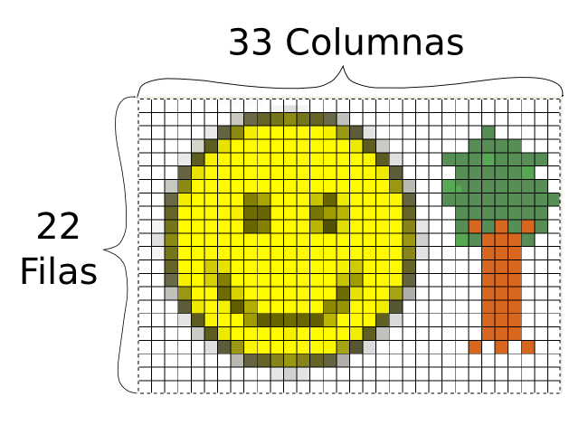<br>
<p>Las cámaras digitales modernas tienen una dimensión mucho, mucho, mas alto.&nbsp;&nbsp; A menudo se hace referencia sobre la base de cuantos milliones de píxeles o "megapíxeles" (megapixels) que tiene.&nbsp; Algunos ejemplos son:<span style="font-weight: normal;"></span></p>
<p style="font-weight: normal;">640x480 = 307200 pixels = 0.3
megapixels<br>
1024x768 = 786432 pixels = 0.8 megapixels<br>
1280x960 =
1228800 pixels = 1.2 megapixels <br>
1600x1200 = 1920000 pixels = 1.9
megapixels<br>
2842x2136 = 6070512 pixels = 6 megapixels<br>
4000x3000
= 12000000 pixels = 12 megapixels</p>
<p style="font-weight: normal;">En cuanto a todas estas, que tiene algo en común, si el primer número se divide por el número de segundos, todos ellos aproximadamente iguals 1.33.&nbsp; La proporción más baja que es igual a 1.33 es 4/3, por lo que este formato de imágenes se dice que tiene una proporción de 4:3. </p>
<br>
<p style="font-weight: normal;">Este es usualmente el estándar para la fotografía, cunado la cámara se lleva a cabo normalmente - esto también es conocido como un "paisaje" (landscape) orientación.&nbsp; Cuando la cámara se lleva a cabo gira al lado, esta relación cambia a 3:4 y se llama "retrato" orientación.&nbsp; Otra resoluciones se observó a mas en la unidad de video. </p>

<p><a href="http://es.wikipedia.org/wiki/Gr%C3%A1fico_rasterizado">http://en.wikipedia.org/wiki/2D_computer_graphics<br>http://es.wikipedia.org/wiki/Computación_gráfica<br>http://en.wikipedia.org/wiki/Raster_graphicshttp://en.wikipedia.org/wiki/Raster_graphicshttp://es.wikipedia.org/wiki/Gráfico_rasterizado</a></p><p>La razón por la que las cámaras han crecido el numero de megapíxeles que utilizan, se debe la que las (con todo lo demás es igaul) dimensiones más http://en.wikipedia.org/wiki/Raster_graphicsgrande que la imagen se vea mejor, especialmente cuando lo imprima.&nbsp; Un buena impresora puede imprimir fotografias a 4800 puntos por pulgada (4800 Dots Per Inch - DPI).&nbsp; En este casa pulgadas (1in = 2.45cm) y puntos (equivalente a un píxele) se utilizan debido a su historia en la industria de impresión. </p>
<p>Esto significa que un imagen de 12 megapíxeles (4000x3000) podria ser impresos en un imagen de 2.1x1.6cm y cada píxel sería visible.&nbsp;&nbsp;<br> </p>
<br>
<p>Sin embargo, si se imprime a una imagen 4.2x3.2cm, entonces cada píxel estaría representada por cuatro puntos en papel.&nbsp; Si el tamaño se duplicó de nuevo a 8.4x6.4 luego cada píxel estaría representada por 16 puntos en papel.&nbsp; Esto empieza a convertirse en un problema cuando se tiene una imagen&nbsp; sin que muchos píxeles en ella y desea imprimir (o visualizar en una pantalla) como una imagen de gran tamaño.&nbsp; En algún momento, los píxeles individuales convierten fácilmente visible en la imagen impresa, y que puede darle una sensación muy bloques y antinatural.&nbsp;<br> </p>
<p>Las imágenes debajo son la misma pieza de un gran imagne tomada de un tortuga.&nbsp; La foto en la parte superior es del tamaño completo de 12 megapixels (4000x3000) de la imagen.&nbsp; La foto en la parte inferior fue tomado en un dimensión mucho menor de 640x480.&nbsp; Observe como los píxeles de la imagen son claramente visibles en la imagen inferior y no se ve claro. <br></p>
<br>
<br>
<br>
<p>Como regla general, es importante para mantener lo mejor imagen posible (la mayoría de píxeles), por lo menos mientros se trabaja con él para editar.&nbsp; La sección sobre recorte y el cambio de tamaño que cubren más de las ventajas y desventajas que se puden hacer al conseguir una imagen lista par imprimir o poner en Internet. </p>
<h3 class="western">Canales (Channels)<br></h3>
<p>En una fotografía, un píxel puede representar muchos colores diferentes.&nbsp; Para expresar esto en un computadora, los píxeles se representan con diferentes "canales" (channels) para los diferentes colores.&nbsp; Un imagen típica tendrá canales: rojo, verde y azul (Red, Green, and Blue - juntos RGB), para las imágenes sin color, tendrán un solo canal (diferentes tonalidades de gris).&nbsp; Cada canal dice qué tan fuerte que el color es, por ejemplo, un píxel que tiene canal rojo muy fuerte y los canales verde y azul muy débil se mostraría como el rojo.&nbsp; Un píxel, donde los tres canales son muy fuertes estaría cerca de blanco, y donde todos son débiles, cerca de negro.<br>
</p>

<p style="text-align: center;"></p>
<p> </p>
<p>La siguiente imagen es un ejemplo de píxeles y los canales de color.&nbsp; La imagen original es la carita en la esquina superior izquierda.&nbsp; En el la version segundo, ampliada, de la cara, puedes ver los pixeles individuales de la imagen, se disponen en filas y columnas, que conforman la imagen.&nbsp; Luego, en el fondo, aún más ampliada segmento, usted puede ver tres píxeles que componen una pequeña área en la esquina inferior izquierda de la imagen.&nbsp; Este segmento tiene los valores para el canales rojo, verde, y azul por escrito sobre la parte superior de cada píxel.</p>

<p style="text-align: center;"></p>
<p> </p>
<p>En este caso podemos ver que para hacer unn color medio gris que a su vez el canal rojo de hasta un 80% de su intensidad, el canal verde también hasta un 80%, y el canal azul al 77%.&nbsp; Tenga en cuenta que estos tres están por encima de 50%, por lo que en todos los canales es bastante luminoso...este color gris es mucho más cerca de lo que es blanco al negro.&nbsp; A continuación, para obtener un color marrón oscuro, que pondría a los canales rojo y verde a 36% y el canal azul sólo al 13%.&nbsp; Porque todas estas son mucho menos del 50%, el color general es oscura y cada vez más cerca a negro. Por último, para obtener un color amarillo, que a su vez los canales rojo y verde casi todo el camino hacia arriba (si queremos un "verdadero" color amarillo que les gire completamente hacia arriba) y dejar el conjunto azul en cero.<br>
</p>
<p>Pruébelo usted mismo mediante el ajuste de los reguladores de la cantidad de rojo, verde, y azul de cada canal y ver lo que los colores que puede ocurrir.</p>
<p><a href="http://developer.yahoo.com/yui/examples/slider/slider-rgb_clean.html">http://developer.yahoo.com/yui/examples/slider/slider-rgb_clean.html</a></p>

<p>Algunos formatos rasterizada también un canal llamado "Alfa" (Alpha), que especifica el brillo del píxel.&nbsp; Si el canal alfa es baja, entonces sería posible para una imagen que se amontona detrás de la serie uno de ellos para mostrar a través.&nbsp;&nbsp; Esto se llama transparencia.&nbsp; Si no hay nada detrás de la imagen, el valor por defecto suele ser negro.&nbsp;<br> </p>
<h3 class="western">Tipos de Archivo</h3>
<h4><b>Tamaño de las fotos</b></h4>
<p>Para una fotografía normal, cada uno de los tres (rojo - Red, verde - Green, y azul - Blue) los canales están representados por un byte de datos para cada píxel.&nbsp; Esto significa que se requiere de tres bytes de datos para cada píxel, esto se refiere a menudo como el color de 24 bits (24 bits, ya que 8 bits es igual a 1 byte y hay tres bytes).&nbsp; Debido a que cada byte puede teer 2^8 o 256 valores diferentes, cada canal puede tener 256 niveles diferentes de ese color (1/256 o 0.39% de variación por nivel, si todo se hace de manera uniforme).&nbsp; Puede haber notado que la R G y B los valores en la demostración se utilizó en la sección de los canales sólo tenía 256 opciones diferentes, si no recuerdo, volver atrás y comprobar que funciona ahora:</p>
<p><a href="http://developer.yahoo.com/yui/examples/slider/slider-rgb_clean.html">http://developer.yahoo.com/yui/examples/slider/slider-rgb_clean.html</a></p>
<p>Debido a que hay tres canales diferentes, eso significa que cada p'ixel puede representar 256x256x256 colores o más de 16 millones de combinaciones de color diferentes.&nbsp; Eso es mucho más de lo que la mayor caja de lápices de colores. </p>
<p>Para una imagen de 12 megapíxeles de una cámara moderna, esto significa que se requeriría 36 megabytes (MB) de espacio de almacenamiento!&nbsp; Eso es mucho cuando sale con su cámara y quiere tomar un montón de fotos.&nbsp; Si usted tiene un 1 gigabyte (GB) tarjeta de memoria para su cámara, que sólo le permiten almacenar aproximadamente 30 imágenes.&nbsp;<br> </p>
<p>Debio al enorme tamaño de los archivos que contienen sólo los píxeles, la gente ha venido con diversas formas de compresión de imágenes en archivos más pequeños.&nbsp; Estos se pueden poner en dos grupos diferentes: sin pérdidas (Lossless) y con pérdida (Lossy).<br> </p>
<h4><b>Compresión Sin Pérdidas </b></h4><p>
</p>
<p>La compresión sin pérdidas (lossless compression) toma los archivos y encuentra maneras matemáticamente de hacer que más pequeños, de una manera que puede ser completamente des-hecho. La manera más fácil de hacer esto es ejecutar la imagen a través de una herramienta de compresión general como Zip.&nbsp; Zip es una herramienta que está disponible en todos los equipos, que pasa a través de cualquier archivo (no sólo imágenes) y encuentra la manera de hacerlo más pequeño.&nbsp; Una manera simple de hacer esto es si hay muchos píxeles en un área que son del mismo color, no puede haber una instrucción que cuando la imagen se dibuja con el color que toda la zona en el color correcto.&nbsp; La misma está diciendo lo que la computadora se puede hacer cientos de veces más pequeña que la cantidad de espacio que requeriría para almacenar todos los píxeles de la zona.&nbsp; Hay muchas otras maneras de hacer esto, pero en general son muy complicados y más allá del ámbito de aplicación de este material. <br></p>
<p><a href="http://en.wikipedia.org/wiki/Lossless_data_compression">http://es.wikipedia.org/wiki/Compresión_sin_pérdida<br>http://en.wikipedia.org/wiki/Lossless_data_compression</a></p>
<p><b>Compresión Con Pérdida </b>
</p>
<p>La compresión con pérdia (lossy compression) es diferente ya que una vez que un archivo comprimido no hay forma de volver exactamente el mismo archivo, algún detalle siempre se pierde.&nbsp; Dado que las imágenes están hechas de millones de píxeles cada posible de representar a millones de colores diferentes, hay margen para la eliminación de los detalles antes de que el ojo humano se notará ninguna diferencia.&nbsp; Esto se puede hacer con una combinación de los métodos de compresión sim pérdidas, al igual que cosas como el supuesto de que un color de un píxel es similar a los píxeles que lo rodean, y los métodos complicados muchos más.&nbsp; También más allá del alcance de este material. &nbsp;<br> </p>
<br><p>Abajo son tres ejemplos que ilustran la compresión con pérdida. El ejemplo de la izquierda es el original y se comprimió con compresión sin pérdidas.&nbsp; La imagen central se comprimió con compresión con pérdida, que fue creado para no perder datos mucho.&nbsp; La imagen de la derecha usa compresión con pérdida, con ajustes muy agresivos.&nbsp; Hizo un tamaño de archivo mucho más pequeño que el del medio (1.1KB frente a 9.4KB) pero obviamente la compresión elimina partes de la imagen que son importantes para hacer que se vea bien.</p><p style="text-align: center;"> </p><p> </p>
<p><a href="http://en.wikipedia.org/wiki/Lossy_compression">http://es.wikipedia.org/wiki/Compresión_con_pérdidas<br>http://en.wikipedia.org/wiki/Lossy_compression</a></p>
<h3><b>Almacenamiento de Archivos<br></b></h3>
<p>Hay muchos tipos diferentes de archivos (files) que se utilizan para las imágenes, la mayoría de los cuales el apoyo de uno o más métodos específicos de compresión sin pérdida o con pérdida.&nbsp; Abajo se muestra una visión general de ellos, hay muchos formatos menos utilizados, además, no que no figuran en esta lista.&nbsp; Ver:&nbsp;
<a href="http://en.wikipedia.org/wiki/Image_file_formats">http://en.wikipedia.org/wiki/Image_file_formats</a>
o <a href="http://en.wikipedia.org/wiki/Comparison_of_graphics_file_formats">http://en.wikipedia.org/wiki/Comparison_of_graphics_file_formats</a> para más información.</p>
<p><b>Bitmap/Mapa de bits</b> (.bmp, otros) -- Contiene todos los píxeles de la imagen, sin compresión.&nbsp; El formato .bmp concreto es utilizado por Microsoft en sus programas para la visualización de imágenes, pero los métodos similares se utilizan en todo tipo de computadoras.&nbsp; Ya que almacena todos los píxeles, este es un formato sin pérdidas, de hecho por defecto no se comprime en absoluto.</p>
<p><b>JPEG</b> (.jpg, .jpeg) -- Soportes de Joint Photographic
Experts Group (grupo conjunto de expertos fotográficos), se desarrolló específicamente para el almacenamiento de imágenes tomadas por cámaras digitales, y es con muho, el formato más utilizado para las fotografías digitales.&nbsp; Se trata de un formato con pérdida, sin embargo con la configuración típica es muy difícil de detectar cualquier degradación de la imagen.</p>
<p><b>PNG</b> (.png) -- Portable Network Graphics (gráfico de la red portátil) es mejor para el almacenamiento de imágenes que no tienen muchos detalles, tales como gráficos en las páginas web.&nbsp; Este es un formato sin pérdidas. </p>
<p><b>GIF</b> (.gif) -- Graphics Interchange Format (formato de intercambio de gráficos) es similar pero más viejo de PNG.&nbsp; En general PNG se debe utilizar en su lugar, sim embargo hay una característica que tiene que PNG no tiene actualmente, que es poder tener varias imágenes almacenadas en su interior, que se pueden reproducir como una animación sencilla. </p>
<p><b>JPEG2000</b> (.jp2) -- Este fue un intento de crear una mejor versión del formato JPEG. Sin embargo no ha tenido mucho éxito y se utiliza sobre todo en situaciones profesionales, tales como imágenes médicas.&nbsp; Este formato tiene opciones que pueden hacer sin pérdida o con pérdida. </p>
<p><b>JPEG XR/HD Photo</b> (.jxr) -- Este es otro intento de crear una mejor versión del formato JPEG, originalmente desarrollado por Microsoft como "HD Photo" que se presentó a la Joint Photographic Experts Group (grupo conjunto de expertos fotográficos), que lo aceptó como un nuevo estándar.&nbsp; Aún no ha prendido en el uso corriente.&nbsp; Este formato tiene opciones que pueden hacer sin pérdida o con pérdida. </p>
<p><b>WebP</b> (.webp) -- Este es un nuevo formato desarrollado por Google que está diseñado para reemplazar JPEG (y algunos PNG) para su uso en las imágenes en la web.&nbsp; No es en la actualidad con el apoyo de todos los navegadores web, pero se está trabajando en él.&nbsp; Este formato es con pérdida. </p>
<p><b>TIFF</b> (.tif, .tiff) -- Tagged Image File Format (etiquetado formato de archivo de imagen) se usa principalmente para imágenes de documentos (como exploraciones).&nbsp; Tiene soporte para múltiples páginas de imágenes, así como los metadatos, como en la imagen se recogió, que lo escribió, etc.&nbsp; Por lo general, se utiliza como un formato sin pérdida, pero tiene la habilidad de usar JPEG o otro tipo de compresión en el interior. </p>
<p><b>RAW</b> (.raw, .cr2, .crw, .nef, .nrw, dng, y más) -- Las imágenes RAW no es un formato específico, sino una agrupación de diferentes formatos, todos los cuales se construyen las cámaras.&nbsp; Por las cámaras por defecto suelen producir imágenes JPEG, que están en pérdidas y no contienen todos los datos básicos que la cámara registró sobre la imagen.&nbsp; Cuando un fotógrafo recibe una imagen en bruto, él or ella recibe todos los datos recogidos que la cámara que puede ser útil cuando se hace el procesamiento avanzado de las imágenes en una computadora. </p>
<p><b>XCF</b> (.xcf) -- eXperimental Computing Facility (facilidad que computa experimental) es el nombre del formato de archivo usado para almacenar los proyectos en el editor de imágenes GIMP.&nbsp; Almacena fotografías sin pérdidas y puede almacenar varias capas de fotos y otros datos tales como texto, líneas, selecciones, y mas.</p>

<p><b>PSD</b> (.psd) -- PhotoShop Documento muy similar al formato XCF, pero utilizado por Photoshop.&nbsp; También es sin pérdidas y puede almacenar varias capas de fotografías y datos.<br>
<br>
</p>
<p><big>Bono, no los formatos de imagen raster:</big></p>
<p><b>EXIF</b> - Exchangeable Image File Format (formato de archivo de imagen intercambiable) se utiliza para los metadatos de la imagen, no es un archivo por su cuenta, pero se incorpora en otros archivos como JPEG.&nbsp; Puede contener un gran número de campos de datos diferentes, incluyendo: la fecha se tomó la imagen, ajustes de la cámara, el tiempo de exposición, tamaño de la abertura, nivel de zoom, coordenadas GPS de la cámara, en dirección a la cámara estaba enfrentando, y muchos más. </p>
<p><b>SVG</b> (.svg) -- Scalable Vector Graphics (gráficos vectoriales escalables) archivos se utilizan para almacenar las imágenes generadas en un equipo, no fotografías.&nbsp; Estos archivos no almacena los píxeles, sino que almacenan información sobre donde las líneas, círculos, texto y otros componentes están en relación entre ellos (se refiere con vectores).&nbsp; Se llama escalable porque las instrucciones para la creación de la imagen se puede dar cualquier unidad de longitud y que toda la imagen basada en eso.&nbsp; Además de las instrucciones para generar la imagen pueden incluir referencias a cantidades de tiempo, por lo que la imagen se puede cambiar a medida que se dibuja hacer una animación.&nbsp; Porque no hay píxeles que se calcula, se trata de un formato sin pérdida inherente. </p>
<p><b>EPS</b> (.eps) -- Encapsulado Post Script archivos son similares a los archivos SVG, pero algo mayor y tiene más funciones limitadas, como no ser capaz de hacer la animación.</p>
<h3>Ejercicios</h3>
<p>1- Seleccione todas las resoluciones de la siguiente imagen que se encuentran en una proporción de 4:3.&nbsp; (Una imagen típica del paisaje)<br>
</p>
<table style="text-align: left; width: 100%;" border="1" cellpadding="2" cellspacing="2">
  <tbody>
    <tr>
      <td style="vertical-align: top;">1920x1080<br>
      </td>
      <td style="vertical-align: top;">1600x1200<br>
      </td>
      <td style="vertical-align: top;">640x480<br>
      </td>
      <td style="vertical-align: top;">720x480<br>
      </td>
      <td style="vertical-align: top;">1280x720<br>
      </td>
    </tr>
    <tr>
      <td style="vertical-align: top;">1000x750<br>
      </td>
      <td style="vertical-align: top;">750x1000<br>
      </td>
      <td style="vertical-align: top;">720x640<br>
      </td>
      <td style="vertical-align: top;">1844x1383<br>
      </td>
      <td style="vertical-align: top;">1152x768<br>
      </td>
    </tr>
    <tr>
      <td style="vertical-align: top;">1024x600<br>
      </td>
      <td style="vertical-align: top;">3000x4000<br>
      </td>
      <td style="vertical-align: top;">1400x1050<br>
      </td>
      <td style="vertical-align: top;">8x6<br>
      </td>
      <td style="vertical-align: top;">4000x3000<br>
      </td>
    </tr>
  </tbody>
</table>
<br>
2- ¿Cuántos canales de color es una fotografía de 24 bits tiene? <br>
A)
24&nbsp;&nbsp;&nbsp;&nbsp;&nbsp;&nbsp;&nbsp;&nbsp;&nbsp;&nbsp;&nbsp;&nbsp;&nbsp;&nbsp;&nbsp;&nbsp;&nbsp;
B)
3&nbsp;&nbsp;&nbsp;&nbsp;&nbsp;&nbsp;&nbsp;&nbsp;&nbsp;&nbsp;&nbsp;&nbsp;&nbsp;&nbsp;&nbsp;&nbsp;&nbsp;
C)
4&nbsp;&nbsp;&nbsp;&nbsp;&nbsp;&nbsp;&nbsp;&nbsp;&nbsp;&nbsp;&nbsp;&nbsp;&nbsp;&nbsp;&nbsp;&nbsp;&nbsp;
D) 6<br>
<br>
3- ¿De qué color par ir de un píxel que tiene los siguientes componentes (8-bit)&nbsp; R:200, G:50, B:200 ?<br>
A) Naranja &nbsp;&nbsp;&nbsp;&nbsp;&nbsp;&nbsp;&nbsp;&nbsp;&nbsp;&nbsp;&nbsp;&nbsp;&nbsp;&nbsp;&nbsp;
B) Café &nbsp;&nbsp;&nbsp;&nbsp;&nbsp;&nbsp;&nbsp;&nbsp;&nbsp;&nbsp;&nbsp;&nbsp;&nbsp;&nbsp;&nbsp;
C) Púrpura &nbsp;&nbsp;&nbsp;&nbsp;&nbsp;&nbsp;&nbsp;&nbsp;&nbsp;&nbsp;&nbsp;&nbsp;&nbsp;&nbsp;&nbsp;
D) Rojo<br>
<br>
4- ¿Qué componentes de pixel (8-bit) que el color amarillo?<br>
A) R:255 G:0
B:255&nbsp;&nbsp;&nbsp;&nbsp;&nbsp;&nbsp;&nbsp;&nbsp;&nbsp;&nbsp;&nbsp;&nbsp;&nbsp;&nbsp;&nbsp;&nbsp;
B) R:200 G:200
B:200&nbsp;&nbsp;&nbsp;&nbsp;&nbsp;&nbsp;&nbsp;&nbsp;&nbsp;&nbsp;&nbsp;&nbsp;&nbsp;&nbsp;&nbsp;&nbsp;
C) R:255 G:255 B:
0&nbsp;&nbsp;&nbsp;&nbsp;&nbsp;&nbsp;&nbsp;&nbsp;&nbsp;&nbsp;&nbsp;&nbsp;&nbsp;&nbsp;&nbsp;&nbsp;
D) R:100 G:50 B: 220 <br>
<br>
5- ¿Cuál es el tamaño sin comprimir de 24-bit, 1600x1200 foto?<br>
A) 5,760
KB&nbsp;&nbsp;&nbsp;&nbsp;&nbsp;&nbsp;&nbsp;&nbsp;&nbsp;&nbsp;&nbsp;&nbsp;&nbsp;&nbsp;&nbsp;
B) 1,920,000
B&nbsp;&nbsp;&nbsp;&nbsp;&nbsp;&nbsp;&nbsp;&nbsp;&nbsp;&nbsp;&nbsp;&nbsp;&nbsp;&nbsp;&nbsp;
C) 1,024
MB&nbsp;&nbsp;&nbsp;&nbsp;&nbsp;&nbsp;&nbsp;&nbsp;&nbsp;&nbsp;&nbsp;&nbsp;&nbsp;&nbsp;&nbsp;
D) 576 KB
<p>6- Las imágenes sin pérdidas son buenos para los sitios web donde es importante tener una rápida descarga.<br>Verdad &nbsp;&nbsp;&nbsp;&nbsp;&nbsp;&nbsp;&nbsp;&nbsp;&nbsp;&nbsp;&nbsp;&nbsp;&nbsp;&nbsp;&nbsp;
Falso</p>
<p>7- Las imágenes sin pérdidas son buenos para la edición de imágenes, donde es importante no perder la calidad durante la edición.<br>
Verdad &nbsp;&nbsp;&nbsp;&nbsp;&nbsp;&nbsp;&nbsp;&nbsp;&nbsp;&nbsp;&nbsp;&nbsp;&nbsp;&nbsp;&nbsp;
Falso<br>
</p>
8- ¿Qué formato de imagen es la más utilizada por las cámaras de los consumidores?<br>
A)
JPEG&nbsp;&nbsp;&nbsp;&nbsp;&nbsp;&nbsp;&nbsp;&nbsp;&nbsp;&nbsp;&nbsp;&nbsp;&nbsp;&nbsp;&nbsp;&nbsp;&nbsp;
B)
PNG&nbsp;&nbsp;&nbsp;&nbsp;&nbsp;&nbsp;&nbsp;&nbsp;&nbsp;&nbsp;&nbsp;&nbsp;&nbsp;&nbsp;&nbsp;&nbsp;&nbsp;
C)
SVG&nbsp;&nbsp;&nbsp;&nbsp;&nbsp;&nbsp;&nbsp;&nbsp;&nbsp;&nbsp;&nbsp;&nbsp;&nbsp;&nbsp;&nbsp;&nbsp;&nbsp;
D)
TXT&nbsp;&nbsp;&nbsp;&nbsp;&nbsp;&nbsp;&nbsp;&nbsp;&nbsp;&nbsp;&nbsp;&nbsp;&nbsp;&nbsp;&nbsp;&nbsp;&nbsp;
E) PSD<br>
<br>
<h2 class="western">The Gimp</h2><p>
    El <acronym class="acronym">GIMP</acronym> es una herramienta de manipulación
    fotográfica multiplataforma. <acronym class="acronym">GIMP</acronym> es un
    acrónimo de <acronym class="acronym">GNU</acronym> Image Manipulation Program (GNU programma de manipulación de imagen). En el
    <acronym class="acronym">GIMP</acronym> se pueden realizar todo tipo de tareas de
    manipulación de imágenes, incluyendo retoque fotográfico, composición
    de imágenes y creación de imágenes.
  </p>
        <p>
    Ofrece muchas funcionalidades. Puede ser usado como un simple programa de
    dibujo, como un programa de retoque fotográfico profesional, como un
    sistema en línea de procesamiento por lotes, como un generador de imágenes
    para producción en masa, para convertir una imagen de formato, etc.
  </p>
        <p>
    <acronym class="acronym">GIMP</acronym>
    es expandible y extensible. Está diseñado para ser ampliado mediante
    complementos (plug-ins) y extensiones para hacer casi cualquier cosa. La
    interfaz avanzada de guionado (scripting) permite automatizar desde las
    tareas más simples hasta los procedimientos más complejos de manipulación
    de imágenes.
  </p>
        <p>
    Uno de los fuertes del <acronym class="acronym">GIMP</acronym> es su libre
    disponibilidad desde varias fuentes para muchos sistemas
    operativos. Casi todas las distribuciones de
    <acronym class="acronym">GNU</acronym>/<span class="application">Linux</span> incluyen
    al <acronym class="acronym">GIMP</acronym> como una aplicación
    estándar. El <acronym class="acronym">GIMP</acronym> también está
    disponible para otros sistemas operativos como
    <span class="productname">Microsoft Windows</span>" o <span class="productname">Mac OS
      X</span>"(<span class="application">Darwin</span>) de Apple. El
    <acronym class="acronym">GIMP</acronym> no es freeware. Es una aplicación
    de Software Libre cubierta por la Licencia Pública General. La
    <acronym class="acronym">GPL</acronym> brinda a los usuarios la libertad de
    acceder y modificar el código fuente del que se construyen los
    programas.
  </p><p style="margin-bottom: 0in;">Resources: </p>
<p style="margin-bottom: 0in;">Manual - <a href="http://docs.gimp.org/">http://docs.gimp.org/2.6/en/<br>
http://docs.gimp.org/2.6/en/</a> - most current version in english<br>
<a href="http://docs.gimp.org/">http://docs.gimp.org/2.6/es/</a> - most
current version in spanish, but parts are not yet translated<br>
<a href="http://docs.gimp.org/2.4/es/">http://docs.gimp.org/2.4/es/</a>
- Previous version in spanish, complete translation, but some parts are
out of date<br>
<a href="http://docs.gimp.org/2.4/en/">http://docs.gimp.org/2.4/en/</a>
- Previous version in english, some parts are out of date<br>
</p>
<p style="margin-bottom: 0in;"><br>
</p>
<h3>The Interface</h3>
<span style="font-weight: bold;">Overview</span><br>

<div class="orderedlist"><div class="orderedlist">
        <p>
      La captura de pantalla anterior muestra el arreglo de ventanas más
      básico y efectivo del GIMP. Se muestran tres ventanas:
    </p>
        <ol type="1"><li>
            <p>
        <span class="emphasis"><em>La caja de herramientas (Toolbox):</em></span>
        Ésta es el corazón del GIMP.  Contiene los menús más
        generales, además de un conjunto de iconos que se emplean para
        seleccionar herramientas, y otras opciones.
      </p>
          </li><li>
            <p>
        <span class="emphasis"><em>Opciones de herramientas (Tool Options):</em></span>
        Empotrado debajo de la caja de herramientas se encuentra el diálogo
        Opciones de herramientas, el cual muestra opciones para la herramienta
        actualmente seleccionada. En este caso se trata de la herramienta de
        selección rectangular.
      </p>
          </li><li>
            <p>
        <span class="emphasis"><em>Una ventana de imagen (Image Window):</em></span>
        Cada imagen abierta por el GIMP se muestra en una ventana. Puede haber
        varias imágenes abiertas al mismo tiempo: el límite lo pone la
        cantidad de recursos de su sistema. Es posible correr el GIMP sin que
        haya imágenes abiertas, pero esto no es nada útil.
      </p>
          </li><li>
            <p>
        <span class="emphasis"><em>El diálogo de capas (Layers Dialog):</em></span>
        Esta ventana de diálogo muestra la estructura de capas de la imagen
        activa, y permite manipularla en una variedad de formas. Es posible
        hacer algunas cosas sin el empleo del diálogo de capas, pero incluso
        los usuarios ocasionales encuentran indispensable tener el diálogo de
        capas disponible todo el tiempo.
      </p>
          </li><li>
            <p>
        <span class="emphasis"><em>Brochas, patrones y degradados:</em></span> El
        empotrable que se encuentra debajo del diálogo de capas
        muestra los diálogos para administrar brochas, patrones y
        degradados.
      </p>
          </li></ol>
      </div></div>
<p>Ésta es la configuración mínima. Muchos otros tipos de diálogos se
    utilizan en el GIMP para diferentes propósitos, pero en general los
    usuarios los abren cuando los necesitan y luego los cierran. Los usuarios
    con conocimiento típicamente tienen abierta la caja de herramientas con
    las opciones de herramienta y el diálogo de capas todo el tiempo. La caja
    de herramientas es esencial para muchas operaciones; de hecho, si se la
    cierra, también se cierra el GIMP (antes de hacerlo se le pide
    confirmación). Las opciones de herramienta son en realidad un diálogo
    individual, que en la captura de pantalla anterior se encuentra empotrado
    en la caja de herramientas. Los usuarios con conocimiento casi siempre lo
    disponen de esta forma: es muy difícil emplear las herramientas de manera
    efectiva sin tener a mano sus ajustes. El diálogo de capas entra en juego
    cuando se trabaja con una imagen que tiene múltiples capas: sólo las cosas
    más básicas se pueden hacer sin ellas. Finalmente, la necesidad de tener a
    las imágenes representadas en ventanas es obvia.
  
</p>
<p><span style="font-weight: bold;">The Image Window</span><br>
</p>
<p></p>
<br>
<div class="orderedlist"><div class="orderedlist">
        <p>
      En el GIMP, cada una de las imágenes que se abren se representan en su
      ventana propia (en algunos casos, múltiples ventanas pueden mostrar la
      misma imagen, pero esto es inusual).  Empezaremos con una descripción
      básica de los componentes presentes por defecto en una ventana de imagen
      ordinaria.  Algunos de estos, de hecho, se pueden ocultar usando comandos
      del menú <span class="link">Ver</span>; pero en
      general no necesitará hacer esto.
    </p>
        <ol type="1"><li>
            <p>
        <span class="emphasis"><em>Barra de título:</em></span> En la parte superior de la
        ventana de la imagen probablemente se encuentre el nombre de la imagen
        y alguna información adicional como título de la ventana.  Esta barra
        la dispone el gestor de ventanas del sistema, no GIMP, por lo que su
        apariencia puede variar con el sistema operativo.  En el <span class="link">diálogo de preferencias</span> puede
        personalizar la información que aparece en el título, si así lo desea.
      </p>
          </li><li>
            <p>
        <span class="emphasis"><em>Menú de la imagen:</em></span> Directamente por debajo de la
        barra de título se encuentra el menú de la imagen (a menos que haya
        sido ocultado).  Este menú brinda acceso a casi todas las operaciones
        que pueden efectuarse sobre una imagen (hay algunas acciones
        <span class="quote">globales</span> que sólo pueden ser accedidas por el menú de
        la caja de herramientas).  Además puede obtener este mismo menú
        haciendo clic derecho dentro de la imagen, o haciendo clic izquierdo sobre la pequeña <span class="quote">flecha</span> de
        la esquina superior izquierda, si por alguna razón lo encuentra más
        conveniente.  Es más: la mayoría de las operaciones del menú pueden
        activarse desde el teclado, usando Alt mas una tecla
        <span class="quote">aceleradora</span> que se encuentra subrayada en el menú.  Y
        más: puede definir sus propios atajos de teclado para las acciones del
        menú, si activa <span class="link"> Usar
        combinaciones de teclas dinámicas </span> en el diálogo de
        preferencias.
      </p>
          </li><li>
            
            <p>
        <span class="emphasis"><em>Botón del menú:</em></span> Hacer clic en este pequeño botón
        hace aparecer el menú de la imagen, en forma de columna en vez de
        fila.  Los usuarios mnemotécnicos que ocultan la barra del menú pueden
        acceder a éste presionando las teclas
        <span class="keycap"><strong>Shift</strong></span>+<span class="keycap"><strong>F10</strong></span>.
      </p>
          </li><li>
            
            <p>
        <span class="emphasis"><em>Regla:</em></span> En la configuración predeterminada, las
        reglas se muestran en la parte superior y en la parte izquierda de la
        imagen, e indican las coordenadas dentro de la misma.  Puede controlar
        el tipo de coordenadas que se muestran si así lo desea.  Por defecto,
        se emplean píxeles, pero puede cambiar a otras unidades, mediante la
        opción Unidades que se describe debajo.
      </p>
            <p>
        Uno de los usos más importantes de las reglas es el de crear
        <span class="emphasis"><em>guías</em></span>. Si hace clic sobre una regla y arrastra
        el ratón hacia adentro de la imagen, se crea una línea guía, la que
        puede usarse para posicionar objetos con precisión.  Las guías pueden
        moverse haciendo clic sobre ellas y arrastrando el ratón, y pueden
        borrarse arrastrándolas fuera de la imagen.
      </p>
          </li><li>
            
            <p>
        <span class="emphasis"><em>Activador de la máscara rápida:</em></span> En la esquina
        inferior izquierda de la ventana de la imagen hay un pequeño botón que
        activa o desactiva la máscara rápida, la cual es una forma
        alternativa, y a menudo muy útil, de visualizar el área seleccionada
        de la imagen.  Para más detalles diríjase a la sección sobre <span class="link">máscara rápida</span>.
      </p>
          </li><li>
            <p>
        <span class="emphasis"><em>Coordenadas del puntero:</em></span> En la esquina inferior
        izquierda de la ventana hay un área rectangular en la que se muestran
        las coordenadas actuales del puntero (esto es, la ubicación del ratón
        u otro dispositivo de entrada), cuando el puntero se halla dentro de
        la imagen.  Las unidades empleadas son las mismas que las de las
        reglas.
      </p>
          </li><li>
            <p>
        <span class="emphasis"><em>Menú de unidades:</em></span> (Esta característica se
        encuentra disponible desde la versión 2.2 del GIMP; no aparece en GIMP
        2.0). Por defecto, las unidades empleadas para las reglas y para la
        mayoría de los propósitos son los píxeles.  Puede cambiar a
        centímetros, pulgadas, o a varias otras usando este menú (si lo hace,
        note que colocar <span class="quote">Punto por punto</span> en el menú Ver afecta
        la forma en que el visor es escalado: vea <span class="link">Punto por punto</span> para más
        información.
      </p>
          </li><li>
            
            <p>
        <span class="emphasis"><em>Botón de ampliación:</em></span> (Esta característica se
        encuentra disponible desde la versión 2.2 del GIMP; no aparece en GIMP
        2.0).  Hay varias maneras de apliar o reducir la imagen, pero este
        menú parece ser la más simple.
      </p>
          </li><li>
            
            <p>
        <span class="emphasis"><em>Área de estado:</em></span> El área de estado aparece debajo
        de la imagen.  La mayor parte del tiempo, por defecto, muestra qué
        parte de la imagen se encuentra actualmente activa, y la cantidad de
        memoria del sistema que está consumiendo.  Puede personalizar la
        información que aparece aquí cambiando sus preferencias.  Cuando
        performa operaciones que tardan cierto tiempo en realizarse, el área
        de estado cambia temporalmente a una barra que muestra el nombre de la
        operación y el estado del progreso.<br>Note que la cantidad de memoria que consume una imagen no es lo
          mismo que el tamaño del archivo que la contiene. Por ejemplo, un
          archivo PNG de 69.7Kb puede ocupar unos 246Kb de memoria cuando se
          abre. Hay dos razones para esto. Primero, la imagen se reconstruye
          desde el archivo PNG comprimido. Segundo, el GIMP mantiene una copia
          de la imagen en memoria para el comando Deshacer.<br></p></li><li><p><span class="emphasis"><em>Botón Cancelar:</em></span> En la esquina inferior derecha de
        la ventana se encuentra el botón Cancelar.  Si inicia una operación
        compleja, que consume mucho tiempo (comúnmente un complemento,
        plug-in), y luego cambia de idea, este botón cancela la acción en
        curso inmediatamente.&nbsp; Hay algunos complementos que responden mal a la cancelación, y
          posiblemente dejan piezas corruptas de imágenes.</p></li><li><p><span class="emphasis"><em>Control de navegación:</em></span>
        Éste es un pequeño botón con forma de cruz que se encuentra en la
        esquina inferior derecha del visor de la imagen. Si se hace clic sobre
        el mismo y se mantiene presionado el botón del ratón, aparece una
        ventana que tiene una vista en miniatura de la imagen, con el área
        visible delineada. Puede desplazarse a otra parte de la imagen
        moviendo el ratón mientras mantiene su botón presionado. La ventana de
        navegación es la forma más conveniente de desplazarse por imágenes muy
        grandes con una pequeña parte visible en la ventana. También vea el
        <span class="link">diálogo de navegación</span>
        , que es otra forma de acceder a la ventana de navegación. Si su ratón
        tiene tres botones, haciendo clic con el botón del medio y arrastrando
        también se puede desplazar por la imagen.
      </p>
          </li><li>
            <p>
        <span class="emphasis"><em>Área de desplazamiento inactiva:</em></span> Este área separa
        el visor de la imagen activa, para que sea posible distinguir entre
        ambas.  No se pueden aplicar filtros ni realizar ninguna operación
        sobre el área inactiva.
      </p>
          </li><li>
            
            <p>
        <span class="emphasis"><em>Visor de la imagen:</em></span> La parte más importante de la
        ventana de la imagen es, por supuesto, el visor de la imagen o lienzo.
        Éste ocupa el área central de la ventana, y está rodeada por una línea
        de puntos amarilla que muestra los contornos de la imagen, contra un
        fondo gris neutro.  Puede cambiar el nivel de ampliación del visor de
        la imagen de varias formas, como el ajuste Ampliación descrito arriba.
      </p>
          </li><li>
            
            <p>
        <span class="emphasis"><em>Botón de escalado de la ventana de la imagen:</em></span> Si
        se presiona este botón, la imagen misma se escala cuando se escala la
        ventana que la contiene.
      </p>
          </li></ol>
      </div></div>Arrastar y colocar (drag and drop) una imagen en la ventana cuadro de herramientas para abrir la imagen en su propia ventana de la imagen.&nbsp; Esto es muy diferente a arrastrar una imagen en una ventana de la imagen, que se suma a la imagen que se abrirán en una nueva capa no suele ser lo que quieres.<br>
<br>
<span style="font-weight: bold;">Deshacer (Undoing)</span><span style="font-weight: bold;"><br></span><p>
    Casi todo lo que se puede hacer sobre una imagen puede deshacerse.
    Puede deshacer la acción más reciente escogiendo
    <span class="guimenu">Editar</span>  <span class="guimenuitem">Deshacer</span>
    del el menú de la imagen.  Pero esto se hace tan a menudo que
    realmente debería memorizar el atajo de teclado,
    <span class="keycap"><strong>Ctrl</strong></span>+<span class="keycap"><strong>Z</strong></span>.
  </p>
      <p>
    El deshacer puede a su vez deshacerse.  Luego de haber deshecho
    una acción, puede <span class="emphasis"><em>rehacerla</em></span> escogiendo
    <span class="guimenu">Editar</span>  <span class="guimenuitem">Rehacer</span>
    del el menú de la imagen, o usando el atajo de teclado,
    <span class="keycap"><strong>Ctrl</strong></span>+<span class="keycap"><strong>Y</strong></span>.
      A menudo es útil juzgar el efecto de una acción deshaciéndola y
      rehaciéndola repetidamente.  Esto usualmente se realiza muy
      rápido, y no consume recursos extra, ni altera el historial de
      deshacer.  Así que no se produce daño al hacer esto.</p><p>
      Si deshace una o más acciones y luego opera sobre la imagen de cualquier
      forma, excepto deshaciendo o rehaciendo, ya no será posible rehacer
      dichas acciones: se perderán para siempre. La solución a esto, si es que
      genera inconvenientes, es duplicar la imagen y luego operar sobre la
      copia (<span class="emphasis"><em>no</em></span>
      sobre el original, porque el historial de deshacer/rehacer no se copia
      cuando se duplica una imagen)</p><p>
    Si a menudo se encuentras deshaciendo y rehaciento muchos pasos a la vez,
    puede ser más conveniente trabajar con el
    Historial de deshacer.
    Éste es un diálogo empotrable que muestra una pequeña imagen para cada
    punto del historial de acciones, y permite retroceder o avanzar hacia
    cierto punto efectuando clics.
  </p>
      <p>
    El deshacer es específico a cada imagen: el "Historial" de deshacer es uno
    de los componentes de una imagen.  Para este propósito, el GIMP aloja
    cierta cantidad de memoria para cada imagen.  Puede personalizar las
    preferencias para incrementar o decrementar dicha cantidad, utilizando la
    página Entorno del diálogo de
    preferencias.  Allí hay dos variables importantes&nbsp;: la <span class="emphasis"><em>cantidad
    mínima de niveles de deshacer</em></span>, la cual será mantenida por el
    GIMP sin importar la cantidad de memoria que se consuma, y la
    <span class="emphasis"><em>memoria máxima para deshacer</em></span>, la cual al ser
    sobrepasada hará que el GIMP comience a borrar los ítems más antigüos del
    historial de deshacer.</p><p>
      Si bien el historial de deshacer es un componente de la imagen,
      no es guardado cuando guarda la imagen usando el formato nativo
      del GIMP, XCF.  Éste sí preserva todas las otras propiedades de
      la imagen.  Cuando la imagen vuelve a abrirse, tiene un
      historial de deshacer vacío.</p><p>La implementación del GIMP del deshacer es bastante sofisticada. Muchas de
    las operaciones requieren muy poca memoria de deshacer (por ejemplo,
    cambiar la visibilidad a una capa), así que puede efectuar secuencias
    largas de las mismas antes de que se empiecen a eliminar del historial de
    deshacer. Algunas operaciones (cambiar la visibilidad a una capa es de
    nuevo un buen ejemplo) son <span class="emphasis"><em>comprimidas</em></span>,
    por lo que efectuarlas varias veces produce un solo punto en el
    historial de deshacer. Sin embargo, hay otras operaciones que pueden
    consumir una gran cantidad de memoria de deshacer. La mayoría de los
    filtros son ejemplos de esto: se debe a que están implementados por
    complementos (plug-ins), y el GIMP no tiene una manera eficiente de
    conocer qué han cambiado, por lo que la única forma de implementar el
    deshacer es memorizando el contenido completo de la capa afectada antes y
    después de la operación. Podrá efectuar unas pocas operaciones de éstas
    antes de que se empiecen a eliminar del historial de deshacer.
  </p>La mayoría de las acciones que alteran la imagen se puede deshacer.&nbsp; Las acciones que no alteran la imagen general no se puede deshacer.&nbsp; Los ejemplos incluyen guardar la imagen en un archivo, duplicar la imagen, copiar parte de la imagen en el portapapeles, etc.&nbsp; Además, incluye la mayoría de las acciones que afectan a la visualización de la imagen sin alterar los datos de la imagen subyacente.&nbsp; El ejemplo más importante es el zoom.&nbsp; Hay, sin embargo, excepciones: alternar máscara rápida dentro o fuera se puede deshacer, a pesar de que no altera los datos de imagen.
<p>Hay unas pocas acciones importantes que alteran una imagen pero no se puede deshacer, a saber: cierre de la imagen, reversión de la imagen, y "piezas " de las acciones. </p>
<span style="font-weight: bold;">Abrir y Guardar una Imagen</span><br>Aquí vamos a utilizar el GIMP para abrir (open), modificar, y guardar (save) nuestra imagen.&nbsp; Para empezar, le permite tomar una <a href="PhotoExamples/Open-Ex-small.jpg">imagen</a>, haga clic derecho en este enlace de la imagen, y seleccione la opción de guardarlo en el disco.<br>
<br>Ahora, vamos a abrir el programa GIMP.&nbsp; Una vez que está abierto, untiliza el Archivo -&gt; Abrir... comando para abrir el cuadro de diálogo Abrir Archivo.&nbsp; Seleccione el archivo que acaba de guardar en el disco un clic en el botón "Abrir".&nbsp; <br><br>Su pantalla debe parecerse a esto.<br>
<br>
<br>
<br>Felicitaciones...estás utilizando con éxito el GIMP!<br>
<br>Ahora, vamos a hacer algo a la imagen, y guardarlo como un archivo diferente.&nbsp; <br>
<br>Haga clic en el botón de pincel:<br>
<br>
<br>Ahora seguir adelante y sacar algo en la parte superior de la imagen...no te preocupes por lo que parece.&nbsp; Si desea empezar de nuevo, utilice el comando "revertir".&nbsp; Simplemente haga clic en Archivo -&gt; Revertir.<br>
<br>
<br>
<br>Ahora que hemos terminado el dibujo, queremos salvarlo, pero no desea sobrescribir el archivo original.&nbsp; Por lo tanto, vamos a ir a Archivo -&gt; Guardar Como... y elegir un nuevo nombre y una abicación para guardar en el disco.&nbsp; Asegúrese de que el nombre de archivo termina en .jpg (o .jpeg) para que el GIMP sabe cómo guardarlo correctamente.&nbsp; A continuación, haga clic en el botón Guardar.<br>
<br>Ahora podrás ver un cuadro de diálogo preguntando qué calidad que quieres que tu imagen se guardará en.&nbsp; Cuanto mayor sea el número, menos datos se pierde durante la compresión con pérdida y el más grande el archivo.&nbsp; Números más bajos le dará archivos más pequeños, pero hará que la imagen se vea mal!&nbsp; Para ayudar a determinar qué tipo de equilibrio entre el tamaño y la calidad que debe hacer, haga clic en la casilla "Mostrar vista previa en la ventana de la imagen".&nbsp; Puede que tenga que arrastrar el diálogo o la "Guardar Imagen" diálogo de la manera de ver su imagen como la vista previa se aplica.&nbsp; Cuando estés satisfecho con él, haga clic en el botón Guardar.<br>
<br>He aquí un ejemplo de configuración de la calidad muy baja, lo que hace que la imagen vista previa mirada terrible...yo no lo guardó como este!<br>
<br>
<br>
<br>Felicitaciones, usted está bien en su manera de trabajar con fotos en el GIMP!<br>
<h3 class="western">Rotación, Recortar, Cambiar el Tamaño<br>
</h3>
Rotación (rotating), recorte (cropping), y cambio de tamaño (resizing) son tres de las formas más básicas, más fácil y se puede transformar un imagen para hacerla coincidir con lo que usted necesita de él.
<p style="margin-bottom: 0in;">Para las actividades en esta sección, vamos a trabajar con la imagen que se puede obtener de <a href="PhotoExamples/PhotoCrop-Ex-orig.jpg">este enlace</a>, haga clic derecho sobre el enlace y guárdelo en su disco. <br>
</p>
<p style="margin-bottom: 0in;"><span style="font-weight: bold;">Rotación</span><br>
</p>
<p style="margin-bottom: 0in;">Cuando se trabaja con fotografías, a menudo se encontrará con aquellos en los que el fotógrafo no se sostiene la cámara perfectamente nivelada antes de que se tomó la imagen.&nbsp; Esto es f/acil de corregir en el GIMP rotando la imagen de neuvo a nivel.&nbsp; Una vez tenemos la imagen abierte, seleccionaremos la herramienta de rotación de la caja de herramientas.</p>
<p style="margin-bottom: 0in;"></p>
<p style="margin-bottom: 0in;">Cuando esta en la herramienta de rotación, simplemente haga clic en la imagen y mientras se está manteniendo pulsado el botón del ratón, mover el ratón.&nbsp; Esta girará alrededor de la imagen, a dar vueltas a una orientación que parece correcto.&nbsp; El poste que el sujeto se inclina en contra debe ser vertical y la línea de la luz/la somra sólo su bajo debe ser horizontal, pero no tiene que ser exacto, lo suficientemente cerca para verse bien.&nbsp; Si le ayuda, puede utilizar el botón de zoom en la parte inferior de la ventana de imagen para ampliarla más sobre el tema.<br>
</p>
<p style="margin-bottom: 0in;"></p>
<p style="margin-bottom: 0in;">Cuando haya terminado en movimiento, y le gusta cómo se ve, haga clic en el botón Rotar.&nbsp; El GIMP procesará la imagen por un momento, y entonces usted tendrá su nueva imagen rotada!&nbsp; (Usted puede guardar ahora para asegurarse de no perder su trabajo.)<br>
</p>
<p style="margin-bottom: 0in;"></p>
<p style="margin-bottom: 0in;">Pero ahora tenemos un poco de un problema!&nbsp; La imagen tiene bordes gris a cuadros!&nbsp; (Este patrón a cuadros gris es lo que muestra el GIMP cuando no hay nada allí, significa que los píxeles de la imagen son completamente en blanco.)&nbsp; Desde que tomó una imagen rectangular y giró sin dejar de mostrarlo en un área rectangular, que había lagunas aparecen (y desaparecido otras áreas).&nbsp; Esto por lo general no es un gran problema, si usted está contento con lo contrario de la imagen, usted puede usar la herramienta de recorte para recortar la imagen hacia abajo un poco. Sin embargo, no estamos contentos con la imagen todavía, así que vamos a hacer otras cosas primero...</p>
<p style="margin-bottom: 0in;"><span style="font-weight: bold;">Recorte</span><br>
</p>
<p style="margin-bottom: 0in;">En primer lugar, la palabra.&nbsp; En general, la palabra "recortar" (crop) se utiliza en todo tipo de publicaciones, arte, diseño gráfico, fotografía, etc., sólo significa cortar los bordes fuera de algo.<br>
</p>
<p style="margin-bottom: 0in;">Hay dos principales razones para recortar una foto.&nbsp; El primero es el tema sólo ocupa una pequeña área de la foto.&nbsp; En este caso, puede recortar la foto de abajo para que el tema es que la mayoría de lo que se muestra.&nbsp; La segunda razón importante para recortar una imagen es mejorar el espacio entre los diversos elementos en la imagen.&nbsp; Esto es un poco más complicada que la primera razón.&nbsp; La mayoría de aficionados que toman fotos creen erróneamente que la imagen se verá mejor cuando el tema de la imagen está en el centro.&nbsp; Sin embargo, a lo largo de los años los artistas han dado cuenta de que esto no es correcto.&nbsp; Es más agradable para el ojo humano cuando los sujetos son de 1/3 or 2/3 del camino a través de una imagen o hacia abajo.<br>
<br>Piense en su imagen en términos de una cuadrícula.&nbsp; Los logares ideales para una asignatura son en las intersecciones de las líneas, representada en este diagrama de puntos grises.&nbsp; Si eso no es posible o factible, entonces usted puede tratar de alinear las características de gran virtud de las líneas verticales y horizontales.<br>
</p>
<br>A menudo puede ser difícil de averiguar cuáles son los temas, o el ajuste de todas las características importantes de una foto y seguir utilizando la regla de los tercios.&nbsp; No se preocupe!&nbsp; Esto no es una ciencia exacta, es sólo una buena regla a tener en cuenta.<br>
<br>Por ejemplo, hay dos imágenes de abajo.&nbsp; El de la izquierda tiene el afloramiento de roca grande centrada en el centro de la imagen.&nbsp; El de la derecha utiliza la regla de los tercios para poner el afloramiento rocoso 1/3 de la manera más desde el lado derecho.&nbsp; Además, el horizonte (donde las rocas con el cielo) es de 1/3 del camino desde la parte superio y las nubes paralelas ocupan la parte superior 1/3 de la imagen.<br>

<p style="margin-bottom: 0in;">Usted puede notar que el de la izquierda se siente un poco más abierto, y menos concurridas.&nbsp; Generalmente es mejor no tener fotos lleno de gente.&nbsp; Además, observe que para conseguir esta sensación con menos gente, el tamaño de las características no tuvo que ser cambiado.&nbsp; La roca y el fondo son del mismo tamaño en ambas imágenes.</p><br>Vamos a continuar con la imagen que estábamos trabajando antes.&nbsp; Para recortar, vamos a seleccionar la herramienta de recorte de la caja de herramientas:<br>
<br>
<br>Podemos seguir adelante y recortar la imagen abajo de modo que sólo las cosas interesantes en el centro en torno al tema es visible.&nbsp; Mueve el ratón a la esquina superior izquierda del área que desea que sea visible.&nbsp; A continuación, haga clic en el botón del ratón, y mientras lo mantiene presionado, mueva el ratón a la esquina inferior derecha del área que desea.&nbsp; El GIMP oscurece el área que será de corte, de modo que el área libre será lo que queda después de la recortar.&nbsp; Cuando esté satisfecho con el área, suelta el botón del ratón. <br>
<br>Si luego decide que desea cambiar el área de alguna forma, puede suspender el ratón sobre el área cerca de los bordes.&nbsp; Se mostrará un cuadro que indica que se va a cambiar esa ventaja (funciona también con las esquinas, luego dos bordes se moverá).&nbsp; En el ejemplo anterior, tengo el cuadro para el borde derecho del área recortar.&nbsp; Para mover este borde, mantenga pulsado el botón del ratón y moverlo hasta que esté satisfecho con la nueva área.&nbsp; Cuando haya terminado, haga clic en el botón del ratón una vez en alguna parte dentro de la zona despejada para completar la recortar.<br>
<br>Peroo la espera, como se discutió previamente, 4:3 es generalmente una buena relación para las fotografías, por lo que sería agradable si la imagen que teníamos cuando se hicieron aún 4:3.&nbsp; Afortunadamente, la herramienta de recorte de el GIMP tiene una opción que se puede establecer para este propósito.&nbsp; Hacemos esto en el "opciones de herramientas" de diálogo por debajo de la caja de herramientas.&nbsp; Puede haber notado que cuando seleccionamos la herramienta de recorte, este cuadro de diálogo cambiará automáticamente a las opciones de la herramienta de recorte.&nbsp; Esto sucederá siempre que seleccione una nueva herramienta, por lo que las opciones que aparecen aquí siempre coincide con la herramienta que está trabajando.<br>Vamos a seguir adelante y marque la casilla delante de "Fijo" (Fixed) y seleccione la opción "Proporción de aspecto" (Aspect Ratio) de la caja.&nbsp; Luego, en el campo de texto justo debajo de esa línea, vamos a poner en una proporción de 4:3.<br>
<br>
<br>Ahora, trate de recortar la imagen de nuevo, para volver a la imagen un paso antes de pulsar las teclas "Ctrl" + "z" un tiempo para deshacer la recortar anterior.&nbsp; (También puede hacerlo en el menú Editar -&gt; Deshacer Recortar Imagen)&nbsp; Observa que al mover el ratón para seleccionar el área que se mantendrá, el cuadro es un poco más rígido.&nbsp; Con la relación de aspecto fija, no es posible aumentar una de las partes sin aumentar uno de los adyacentes.<br>
<br>Alas, no estamos muy hecho...no hemos utilizado nuestra regla de los tercios con todo en la zona que vamos a recortar.&nbsp; Una vez más, el GIMP está ahí para ayudarnos con esto.&nbsp; La herramienta Recortar tiene una opción para mostrar una "guía" (guide) que pone las líneas de la regla de los tercios en la ventana sobre la elección de su área.&nbsp; Para activarlo sólo tiene que seleccionar "Regla de los tercios" de la selección de guías desplegable en el cuadro de la herramienta Recortar.&nbsp; (Es probable que en la actualidad, dice "Sin guías" en las opciones de la herramienta.)<br>
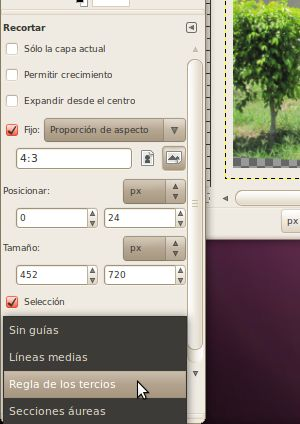<br>
<br>
Bien, ahora estamos listos para nuestro intento final en cultivo.&nbsp; Si actualmente tiene una imagen ya recortada en la pantalla pulse Ctrl + z hasta que regrese a la imagen que había después de que la gira.&nbsp; A continuación, seleccione un área que tiene el tema que ocupa una gran parte de la zona, es una relación 4:3, y usa la regla de los tercios y recortar es!<br>
<br>
<br>Y ahora tenemos nuestra imagen final, recortada:<br>
<br>
<br>
<span style="font-weight: bold;">Cambiar el Tamaño</span><br>Puede haber notado que la imagen que acabamos de terminar con ocupaba la mayor parte de la ventana del navegador, incluso después de que fuera recortado una gran parte de ella.&nbsp; Como las cámaras digitales hoy en día son capaces de tomar imágenes tan grandes, de alta resolución, este es un problema bastate común cuando las imágenes se utilizan en la web.&nbsp; Es posible que el sitio le dicen al navegador web, para reducir el tamaño de la imagen y no la pantalla a tamaño completo, pero usted todavía tiene que transferir la imagen completa.&nbsp; Porque la imagen es tan grande, que tiene que almacenar todos los píxeles y el tamaño del archivo también es grande.&nbsp; La imagen de arriba es 131KB, que no es enorme, pero puede hacer que el sitio lento para cargar, especialmente si usted tiene un montón de imágenes así.&nbsp; En su lugar, lo que debe hacerse, es la imagen debe ser cambiar el tamaño hasta ser del tamaño correcto para mostrar.&nbsp; cambiar el tamaño de esta manera no va a cambiar lo que parece en el sitio web (si aparece en la misma resolución).&nbsp; Esto es diferent de usar el selector de calidad al guardar la imagen, que hace cambiar la forma en la imagen se ve (solo espero que no por lo que el ojo puede distinguir).<br>
<br>Una nota rápida, casi nunca hay una buena razón para cambiar el tamaño de una imagen a algo más grande.&nbsp; Al reducir el tamaño, el programa haciendo la contracción puede fácilmente llevar a cabo píxeles para que sea el tamaño correcto.&nbsp; Sin embargo, si usted fuera a tratar de hacerlo más grande, que no sabe lo que los píxeles de píxeles entre el actual debe ser para agregarlos.&nbsp; Así que lo que hace es simplemente conjeturas, en base a lo que los p;ixeles son alrededor de él.&nbsp; De heco, esto hará que sea más grande, pero también aumentará el tamaño del archivo de la imagen.&nbsp; Si quieres una imagen más grande en su sitio web que es cuando es mejor para el sitio de decirle al navegador web cómo es grande la imagen debe ser.<br>
<br>Cambiar el tamaño en el GIMP es fácil.&nbsp; Sólo tienes que ir a Imagen-&gt; Escalar Imagen.&nbsp; Verá el cuadro de diálogo Escalar la Imagen en la pantalla.&nbsp; Ahora puede introducir el tamaño que desee para una imagen.<br>Si usted tiene un sitio web, usted ya puede saber exactamente el número de píxeles que desa la imagen.&nbsp; Para ello, puede seleccionar "píxeles" el la primera gota desplegable, a continuación, poner el número de píxeles que desea para la anchura o la altura.&nbsp; Usted sólo tiene que poner uno de los valores en, y el GIMP calculará automáticamente el otro.&nbsp; Es posible cambiar de forma independiente (haciendo clic en la pequeña cadena entre ellos para desvincular), pero esto casi nunca se debe hacer porque va a hacer que la imagen para distorsionar y hacer que se vea estirado.<br>Si usted todavía no sabe las dimensiones exactas que necesita tu imagen, es generalmente más fácil para volver a su tamaño a un procentaje del original.&nbsp; Para ello, seleccione "por ciento" (percent) de la primera gota desplegable, a continuación, escriba lo mejor posible llegar a lo que por ciento de la original que quieres que tu nueva imagen de ser.<br>
<br>
<br>
<br>
Si usted es feliz con su imagen, puede seguir adelante y guárdelo.&nbsp; Si usted está tratando de hacerlo pequeño para un sitio web, no te olvides de ajustar el selector de calidad que sea lo más pequeña posible.&nbsp; <br>
<br>Despues de todo lo que rotar, recortar, y cambia el tamaño, aquí está la imagen final.&nbsp; Su sólo 24KB, cuando empezamos con un original 3900KB!<br>
<br>
<br>
<span style="font-weight: bold;">Ejercico</span><br>Estas tres imágenes son muy similares a los originales, todos ellos se pueden rotar, recortar, y cambiar el tamaño.<br>
<a href="PhotoExamples/PhotoCrop-A-orig.jpg">PhotoCrop-A-orig.jpg</a><br>
<a href="PhotoExamples/PhotoCrop-B-orig.jpg">PhotoCrop-B-orig.jpg</a><br>
<a href="PhotoExamples/PhotoCrop-C-orig.jpg">PhotoCrop-C-orig.jpg</a><br>
<h3 class="western">Selección y Corrección de Ojos Rojos<br>
</h3>Todos hemos visto fotos en el pasado en los ojos del sujeto(s) no son normales, pero su color rojo brillante. &nbsp; Puede haber various niveles de este que van desde apenas detectable al rojo muy brillante.&nbsp; Esto es causado por la luz del flash de la cámara se refleja en los vasos sanguíneos en la parte posterior del ojo y de nuevo a la cámara. <br>Para obtener más información, consulte: <a href="http://es.wikipedia.org/wiki/Efecto_de_ojos_rojos">http://es.wikipedia.org/wiki/Efecto_de_ojos_rojos</a>, <a href="http://en.wikipedia.org/wiki/Red-eye_effect">http://en.wikipedia.org/wiki/Red-eye_effect</a><br>
<br>
Como se trata de un problema tan común en las fotografías, el GIMP se ha construido en un herramienta para la eliminación de lo que vamos a trabajar en esta sección. <br>
<br>En primer lugar, vamos guardar <a href="PhotoExamples/Redeye-Ex-orig.jpg">este</a> archivo en el disco, y ábralo con el GIMP.&nbsp; <br>
<br>
<br>Se puede ver que hay tres ejeplos de los ojos rojos (Redeye o Red Eye) aquí.&nbsp; Dos (la mujer de la izquierda y el hombre) tiene una gran cantidad, y la mujer en el centro sólo cuenta con un muestra pequeña.<br><br>Para corregir los ojos rojos, vamos a ejecutar la herramienta de eliminación de ojos rojos.&nbsp; Lo puedes encontrar en Filtros (Filters) -&gt; Realzar (Enhance) -&gt; Quitar ojos rojos...<br>
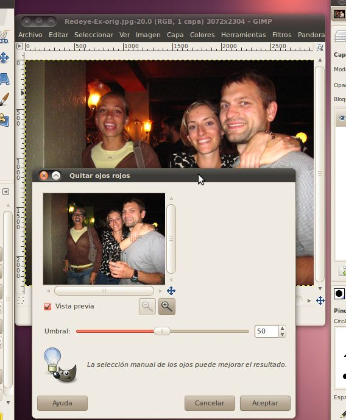<br>Si todo funciona bien, debe ser capaz de hacer clic simplemente el botón y hacer que eliminar todos los ojos rojos.&nbsp; Seguir adelante y tratar ahora.<br>
<br>
Ahhhh!&nbsp; ¿Qué ha pasado!?&nbsp; Parece que la gente tiene moho que crece en ellos, esto es terrible.<br>
<br>
<br>Utilidad de la herramienta que hice fue ir a través de toda la foto y encontrar todos los lugares donde había una gran cantidad de rojo, y tratar de eliminarlo.&nbsp; Lamentablemente esta foto había un montón de lugares así...los labios de la gente, la mujer en la cara de la izquierda, la pared en el fondo, etc.&nbsp; Usted podría tratar de usar el control deslizante para reducir el umbral para que no se de recogida tanto, pero que no funciona muy bien para esta imagen tampoco, pero vamos a tratar de todos modos.<br><br>Esta vez le vamos utilizar la ventana de previsualización de la captura de la cara de la mujer a la izquierda.&nbsp; Al mover el cursor alrededor, verás que antes que mayoría de la rojos de sus ojos se ha ido, hay artefactos extraños a aparecer en los labios.<br>
<br>
<br>
<br>En lugar de simplemente utilizar esta herramienta, vamos a tener que intentar una táctica diferente para fijar esta imagen.&nbsp; Vamos a utilizar la herramienta de selección para seleccionar sólo los ojos, a continuación, ejecute la herramienta de ojos rojos sólo en la zona seleccionada.&nbsp; Pronto encontrará que el uso de la herramienta de selección es uy potente y la posibilidad de seleccionar determinadas zonas de fotos hace que casi todas las cosas que usted puede hacer posible con el GIMP.&nbsp; Incluso el recorte que hicimos en la última sección es sólo un conjunto de funciones especiales en capas sobre la herramienta de selección, de hecho, usted puede hacer todas las cosas que hicimos en la última sección, simplemente haciendo una selección y luego hacer clic en la Imagen -&gt; Recortar a la selección.&nbsp; Instead of just using this tool, we're going to have to try a different
tactic to fix this image.&nbsp; We're going to use the selection tool
to select just her eyes, then run the red eye tool on just that
selected area.&nbsp; We will soon find that using the selection tool is
very powerful and the ability to select certain areas of photos makes
almost all the things that you can do with the GIMP possible.&nbsp;
Even the cropping that we did in the last section is just a set of
special functionality layered over the selection tool, in fact you can
do all the things we did in the last section by simply making a
selection and then clicking Image -&gt; Crop to selection.<br>
<br>Vamos a empezar por seleccionar la herramienta de selección rectangular de la caja de herramientas.<br>
<br>
<br>Con esta herramienta es casi exactamente lo mismo que usar la herramienta de recorte, excepto cuando haya terminado usted tiene una selección de la imagen, no una image más pequeña.&nbsp; Vamos a utilizar para crear un rectángulo alrededor de una de los ojos de la mujere de la izquierda.&nbsp; Zoom si es necesario, por lo que no selecciona mucho más.<br>
<br>Hay varias formas de zoom en (y fuera) en el GIMP, pero la más fácil de es probablemente sólo hacer clic en el cuadro de zoom en la barra inferior de la ventana de la imagen y seleccionar el tamaño que desee.<br>
<br>
<br>
<br>
<br>Si ahora hace clic dentro de la selección (o pulsa Intro) la selección se pegue, pere no es necesario hacer esto, puede ejecutar las herramientas en él incluso antes de que se pega.<br>
<br>Ahora vamos a regresar y ejecutar la reducción de ojos rojos filtro nuevo (Filtros -&gt; Realzar -&gt; Quitar ojos rojos...).&nbsp; Esta vez podemos camiar el umbral de un poco más alto, porque no hay mucho más que es muy rojo en la imagen.<br>
<br>
<br>Ahora que tenemos que bajar, podemos ir adelante y hacerlo a las otras cinco ojos en la imagen.<br>
<br>
<br>Yo diría que se ve mucho mejor! No es todavía una gran fotografía, pero al menos no se ven como si estuvieran poseídos por el demonio.<br>
<br><span style="font-weight: bold;">Ejercicios</span><br>Estas imágenes son ejemplos de ojos rojos que puede ser removido mediante la selección de los ojos y ejecutar la herramienta de eliminación de ojos rojos en ellos.<br>
<br>
<a href="PhotoExamples/Redeye-A-orig.jpg">Redeye-A-orig.jpg</a><br>
<a href="PhotoExamples/Redeye-B-orig.jpg">Redeye-B-orig.jpg</a><br>
<a href="PhotoExamples/Redeye-C-orig.jpg">Redeye-C-orig.jpg</a><br>
<h3 class="western">Advanced Selection and Layers<br>
</h3>
<p style="margin-bottom: 0in;">Ahora que tenemos algunos de los fundamentos como cambiar el tamaño y la selección de abajo, vamos a ser un poco más avanzado.&nbsp; En esta sección vamos a combinar dos imágenes distintas en una sola imagen de como un foto la que podría imaginar sido adquirido por una persona con una cámara, pero no fue.&nbsp; Esta es una herramienta poderosa que puede usarse para engañar a los demás, haciéndoles pensar que algo que realmente sucedió cuando en realidad no fue así.&nbsp; Muchas personas han tratado de engañar a los demás con esto, y muchos se han encontrado, como el pais de Irán, tratando de demostrar que lanzó cuatro misiles cuando sólo lanzó tres: <a href="http://mangasverdes.es/2008/07/11/iran-lanza-misiles-con-photoshop/">http://mangasverdes.es/2008/07/11/iran-lanza-misiles-con-photoshop/</a>.&nbsp; Como editor de fotos, es su trabajo para utilizar estas herramientas de manera responsable.<br>
</p>
<p style="margin-bottom: 0in;">Vamos a empezar por tomar una foto de un <a href="PhotoExamples/LayerForeground-Ex-orig.jpg">avión</a> de ponerla en ul fondo de una imagen de la <a href="PhotoExamples/LayerBackground-Ex-orig.jpg">Estatua de la Libertad</a>.&nbsp; <br>
</p>
<br>
<a href="PhotoExamples/LayerForeground-Ex-orig.jpg">Un Avión<br>
</a><br>
<br><span style="text-decoration: underline;"></span><a href="PhotoExamples/LayerBackground-Ex-orig.jpg">La Estatua de la Libertad<br>
</a><br>Vaya por delante y guardar esos archivos en el disco, y luego abrirlos en el GIMP.&nbsp; Como se trata de un proyecto más complicado de lo que nuestros seres pasado, vamos a guardar la imagen Estatua de la Libertad en un archivo separado que el GIMP utiliza para almacenar todos los datos sobre el proyecto.&nbsp; Este es un XCF (eXperimental Computing Facility - facilidad que computa experimental) archivo, y almacena todos los datos de la imagen en un formato sin pérdida, así como datos sobre la capa y los canales que vamos a utilizar para este proyecto.&nbsp; Para guardar como este tipo de archivo, en la imagen de la estatua, vaya a Archivo -&gt; Guardar como... y, a continuación, en el cuadro nombre, cambie la extensión de .jpg a .xcf a haga clic el botón Guardar.&nbsp; Puede cambiar el nomber algo completamente diferente o salir de lo mismo, siemmpre y cuando tengan la extensión .xcf.&nbsp; Esto dejará el original .jpg solo, por lo que podría volver atrás y volver a abrirlo si necesita más, sin tener que volver a descargarlo.<br>
<br>La premisa básica de cómo vamos a agregar el avión en la foto de la estatua es que vamos a seleccionar sólo el avión (sin ningún tipo de fondo del cielo) a partir de su foto, y luego copiar y pegar eso en la estatua de la libertad.&nbsp; A continuación nos pondermos en contacto a otro truco para hacer que se vea aún mejor.<br>
<br>Hay varias formas diferentes de hacer la selección.&nbsp; Podríamos hacer la selección rectangular como lo hicimos en la última imagen, pero luego se va a terminar con todo el cielo de la imagen del avión que había en la caja en la foto estatua.<br>
<br>No se ve muy natural.&nbsp; Tendremos que utilizar una de las herramientas de selección que nos acaba de llegar el avión.<br>
<br>La herramienta más básica para la selección de un área específica, de una forma arbitraria es la "Selección Libre" (Free Select) o Lasso herramienta.&nbsp; Esta herramienta nos permitirá extraer cualquier forma que desee en la pantalla, y cuando conecte la línea de regreso al inicio, selecciona la zona. <br>
<br>Vamos a escoger la herramienta "Selección Libre".<br>
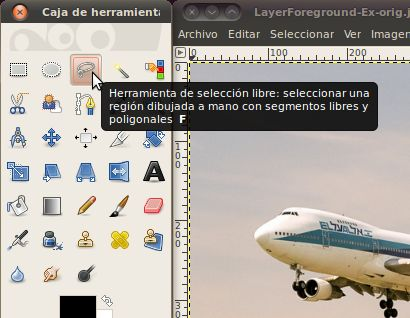<br>Ahora que tenemos la herramieta seleccionada, podemos empezar a esbozar el avión.&nbsp; Será mucho más fácil encontrar los puntos correctos para seleccionar si se captura, uso del 400%.&nbsp; Sólo tiene que encontrar un lugar en la frontera entre el avión y el cielo, y haga clic en para hacer su primer punto.&nbsp; A continuación, mueva el cursor del ratón ya sea horario o antihorario a otro píxel cerca que separa ese avión y el cielo.&nbsp; Verá una línea se extienden entre el primer punto y el cursor.&nbsp; Ajuste el cursor para que la línea sigue el borde entre el avión y el cielo.&nbsp; Si elige la zona complicada con el tren de aterrizaje y los motores, esto podría ser una línea muy corta.&nbsp; En el otro tenía si comenzó el la parte superior, esta línea será un poco más.<br><br>Aquí está mi línea que se inició en la parte superior, se acercó un pequeño bulto (una antena) alrededor de la cabina y se encuentra actualmente en la nariz:<br>
<br>
<br>
<br>esto va bien, pero cuando usted seguir adelante y entrar en las partes más complejas de la imagen, esta empezando a ser <span style="font-style: italic;">muy</span> tedioso.&nbsp; Hay tantas piezas pequeñas que se necesitarían cientos de clics para realizar con precisión las líneas que separarlos.<br>
<br>Una herramienta más para conseguir todas estas cosas complejas, es la herramienta tijeras inteligentes (Intelligent Scissors).&nbsp; Vamos a ir a buscar eso.<br>
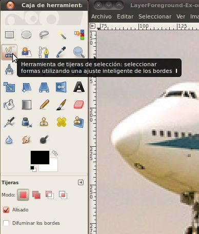<br>Las tijeras inteligentes es una pieza interesante: tiene algunas características en común con el lasso, algunas características en común con la herramienta rutas, y algunas características propias.&nbsp; Es útil cuando usted está tratando de seleccionar una región definida por los fuertes cambios de color en los bordes.&nbsp; Para emplear las tijeras, se hace clic para crear un conjunto de "nodos de control" (Control Nodes), también conocido como anclas o puntos de control, en los bordes de la región que está tratando de seleccionar.&nbsp; La herramienta produce una curva continua que pasa por los nodos de control, siguiendo el borde de alto contraste que puede encontrar.&nbsp; Si tienes suerte, el camino que encuentra la herramienta se corresponderá con el contorno que está tratando de seleccionar.<br>
<br>Podemos empezar a usarlo de manera similar a la herramienta de selección libre, ponga un punto en el borde de la límite entre el avión y el cielo.&nbsp; A continuación, se mueven a lo largo de que bordean y colocar otro punto.&nbsp; Aunque, esta vez no va a ver una línea del punto anterior al cursor, sólo tiene que escoger un punto.&nbsp; Luego al hacer clic en el equipo tratará de determinar cuál es la borde natural es que tanto lo puntos están en, y hacer una línea que coincide con la borde.&nbsp; Si sigue el zoom a 400%, esto se verá un poco irregular, que suele ser debido a que estamos tratando con los píxeles individuales en este nivel y no siguen un borde muy limpio.&nbsp; No se preocupe demasiado acerca de él, cuando contraerá este avión, hasta ponerlo en la foto estatua, que no podrá contar.<br>
<br>
<br>A veces el equipo no va a adivinar correctamente que la línea debe ir, como en este caso.<br>
<br>Por alguna razón, se decidió en una línea a través de los motores, en lugar de entre los motores y el cielo, pero no se desespere, es fácil de arreglar.&nbsp; Simplemente vamos a añadir otro punto entre esos dos para que funcione a mejor.&nbsp; Cualquier lugar que no le gusta que el equipo pensaba que la línea debe ir, usted puede agregar fácilmente un nuevo punto.&nbsp; Simplemente hax clic en la línea existente para hacer el punto.<br>
<br>A continuación, haga clic y arrastre el nuevo punto de que hasta el lugar adecuado para ello.<br>
<br>Puede que tenga que hacer clic y arrastrar más de una vez para el equipo para encontrar una línea que es bastante bueno para lo que estamos tratando de hacer.&nbsp; Además, no es necesario agregar un nuevo punto para moverlo, puede hacer clic y arrastrar cualquier punto en el que hemos creado para hacerlo en un lugar mejor.&nbsp; El GIMP automáticamente volverá a dibujar la línea cuando lo dejas ir.&nbsp; <br><br>Como usted vaya debajo del avión, es probable que no tiene que preocuparse de cada área diminuta.&nbsp; Cuando reducir esta imagen hacia abajo, la mayoría de los detalles no serán tan fáciles de ver.&nbsp; <br>
<br>
<br>Una vez que hemos hecho todo el camino alrededor del avión, <br>
<br>solo haga clic en el interior de su selección para completarlo.<br>
<br>Ahorar vamos a ver lo que sólo el área que hemos seleccionado parece.&nbsp; En primer lugar vamos a copiar la selección pulsando las teclas Ctrl+c combinación.&nbsp; Luego, sin hacer nada a la ventana de la imagen que vamos a volver a pegarla allí pulsando las teclas Ctrl+v combinación.&nbsp; Ahora si usted mira en el diálogo de capas, verás que hay una nueva selección flotante (floating selection) que figuran allí.<br>
<br>Vamos a seguir adelante y hacer esto en una capa completa de la imagen haciendo clic derecho sobre la selección flotante en las capas de diálogo y seleccionar "capa nueva".&nbsp; Una vez que hayas terminado con eso, podemos ver las dos capas en el diálogo de capas.<br>
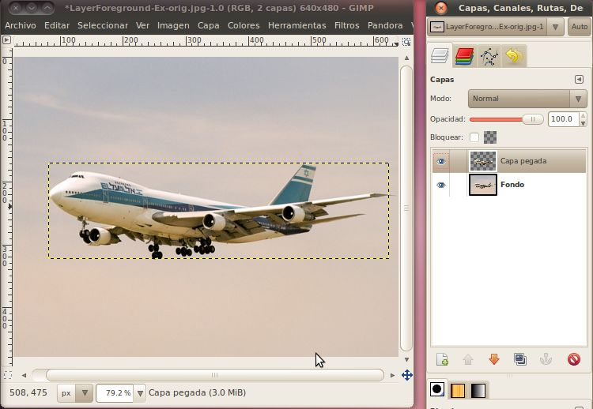<br>
<br>Ahora que estamos usando capas, que probablemente debería haber una explicación rápida de lo que son.<br>
<br>es probablemente más fácil pensar en capas como una pila de transparencias, donde se combina el contenido de lo que hay en cada capa juntos para hacer que la imagen que vemos.&nbsp; Es posible tener una capa que está completamente en color, en el que nada de caso de las capas inferiores que se pueden ver.&nbsp; Del mismo modo, es posible utilizar el canal alfa (alpha) para controlar la transparencia de algo es de las capas inferiores.&nbsp; Por ejemplo, si teníamos un color naranja brillante (no transparente) en la capa superior de una imagen del auto, no sería capaz de ver el auto.&nbsp; Sin embargo, si se volvío el nivel alfa de la capa de color naranja por lo que era más transparente, se podía ver el coche, pero tendría un tinte de color naranja a la misma.<br>
<br>
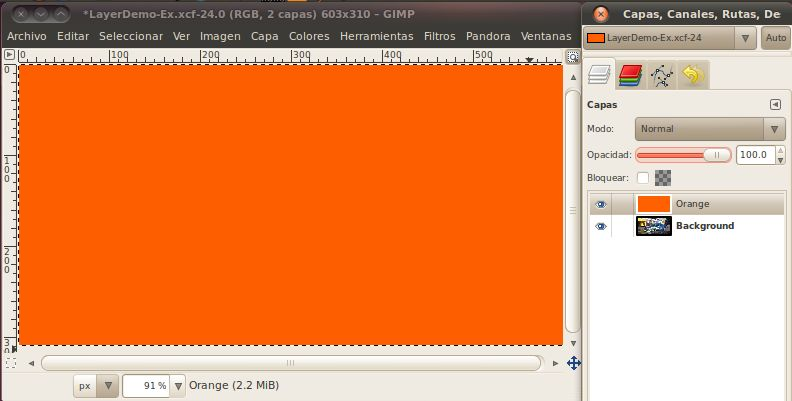<br>
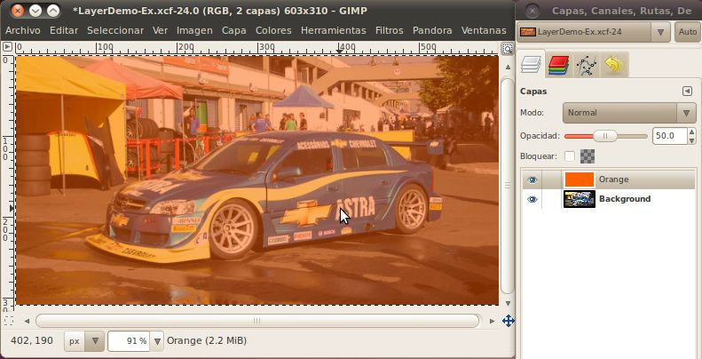<br>
<br>
Además, una capa no tiene que asumir toda la zona de la imagen.&nbsp; Por ejemplo, cuando pega el avión de nuevo a la misma imagen, la capa que se creó sólo consistía en una caja lo suficientemente grande como para contener la selección.&nbsp; Puedes ver su contorno por encima de las capturas de pantalla en la que se pega.&nbsp; Otro ejemplo de las capas que no son del tamaño de la imagen completa de texto.&nbsp; Cada vez que utilice la herramienta de texto para escribir sobre una imagen, se creará automáticamente una nueva capa que el texto se encuentra, y esa capa será un rectángulo lo suficientemente grande para el texto para ajustarlo.&nbsp; <br>
<br>Pero vovamos a nuestra imagen avión.&nbsp; Ahora que tenemos una capa que sólo contiene la imagen pegada del avión, podemos ocultar la capa con todo su contenido y ver lo que hemos pegado.&nbsp; Basta con hacer clic en el icono de ojo situado junto a la imagen de fondo para ocultarla.<br>
<br>Ahora tenemos el avión que hemos seleccionado (y copiar y pegar) y el fondo predeterminado GIMP nos dice que todo lo demás en la imagen es transparente.<br><br>Si nos zoom, podemos ver que nuestra selección no era perfecto.&nbsp; Hay un poco de cielo restante de todo el tren de aterrizaje principal, y un triángulo entre el tren de aterrizaje delantero y el ala que se extiende hacia abajo a la izquierda.&nbsp; 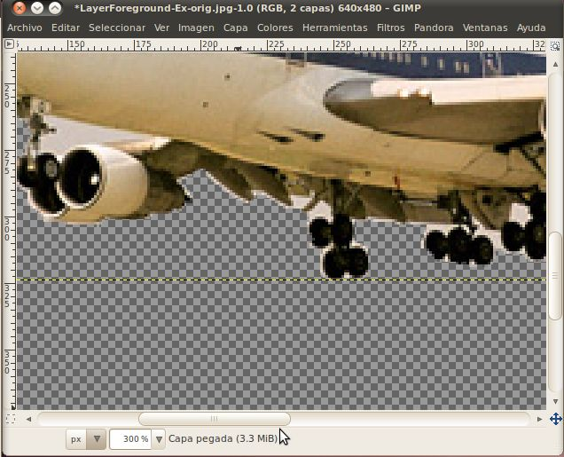<br>Esto no va a ser un problema, ya que será muy pequeño en nuestra imagen final, pero podemos limpiar sólo para la práctica.&nbsp; Vamos a utilizar la herramienta de borrar para entrar y sacar los pedazos de cielo.&nbsp; <br>
<br>Primero vamos a seleccionar la herramienta de borrar (eraser).<br>
<br>
<br>El borrador es una de las herramientas que tiene un pincel (brush) asociados a ella.&nbsp; Un pincel es simplemente el modelo que la herramienta funciona, los pinceles más comunes son circulares con tamaños que verían.&nbsp; Para esto se recomienda usar un círculo (03) pincel, o, posiblemente, círculo (01) para algunos de los más pequeños, las áreas más detallada.&nbsp; El (03) y (01) se refieren al tamaño de la brocha, por lo que el (01) es menor.&nbsp; Para seleccionar el pincel correcto, haga clic en la foto junto al pincel de la palabra "pincel" en el cuadro de diálogo opciones de goma de borrar.<br>
<br>
<br>Ahora que tenemos un pincel decente, podemos usar la borrar para eliminar partes de la imagen que no queremos.&nbsp; Basta con hacer clic una vez para eliminar la cantidad exacta en el pincel, o haga clic y arrastre alrededor de quitar cualquier lugar al que arrastra el pincel.&nbsp; Se dará cuenta de que cuando se quita algo, que vea el fondo de cuadros grises.&nbsp; Esto indica que esta capa es ahora completamente transparente en ese lugar. <br>
<br>
<br>Ahora que hemos limpiado el avión, es hora de que la importación en la foto de la Estatua de la Libertad.&nbsp; Para ello, primero queremos volver a seleccionar el limpiado avión.&nbsp; Dado que es todo lo que es la capa actual (esto sólo funciona en la capa actual, incluso si las otras capas son visibles) que sólo recibirá el avión en que sólo tiene que seleccionar todo.&nbsp; Para seleccionar todo lo que entra las teclas Ctrl+a combinación (también en el menú Seleccionar -&gt; Todo).&nbsp; Ahora podrás ver una línea alrededor del área de la capa entera.&nbsp; Una vez más, vamos a copiar este pulsando Ctrl+c.&nbsp; <br>
<br>Ahora tenemos el avión copiado al portapapeles, vamos a abrir la ventana de la imagen de la foto estatua y pegarlo allí usando Ctrl+v.<br>
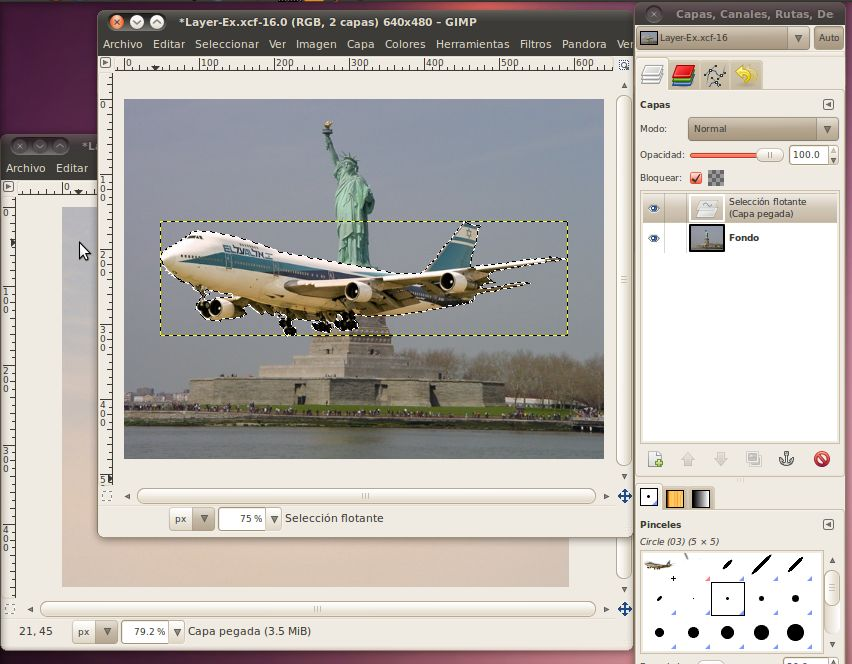<br>
<br>Woah!&nbsp; Su enorme!&nbsp; Si vamos hacia atrás y mire, la imagen del avión fue 640x480, y la imagen de la estatua fue las mismas dimensiones 640x480.&nbsp; Eso significa que algo que ocupa la mitad de la zona en la primera foto también se ocupará de la mitad de la zona en la segunda imagen.&nbsp; Es importante entender que el nivel de zoom que tiene cada imagen fijada en no afecta el tamaño del elemento que está pegando es decir, sólo el número de píxeles que ocupa.<br>
<br>Pero no te preocupes, que puede fácilmente cambiar el tamaño del avión que nos acaba de pegar en la imagen de su propia capa.&nbsp; En las capas de diálogo haga clic derecho sobre la capa que dice "Selección flotante (Capa pegada)" y haga clic en "Capa nueva".&nbsp; Ahora tenemos una capa separada que puede jugar.<br>
<br>Para cambiar el tamaño de ella, vamos a utilizar el menú Capa -&gt; Escalar capa...&nbsp; Si se establece en un 25% se ve bien.&nbsp; Hágalo igual que en la sección de imágenes de tamaño de nuevo, cambie el menú desplegable que decir "por ciento" y luego poner un valor crees que es bueno en una de las cuadros y haga clic en la "Escala" botón.&nbsp;&nbsp; He encontrado un 20-30% trabaja bien para esta imagen.<br>
<br>
<br>
<br>Ahora deberíamos tener un avión del tamaño adecuado, pero es justo en el centro de la imagen, delante de la estatua...no es un lugar muy realista de un avión.&nbsp; Sería bueno si pudiéramos subir al cielo.&nbsp; <br><br>Para moverlo, sólo tendremos que utilizar la herramienta de mover.&nbsp; Recogida desde la caja de herramientas<br>
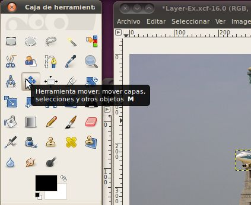<br>luego haga clic dentro del cuadro de selección con el avión, y arrastra a un buen lugar en el cielo.<br>
<br>
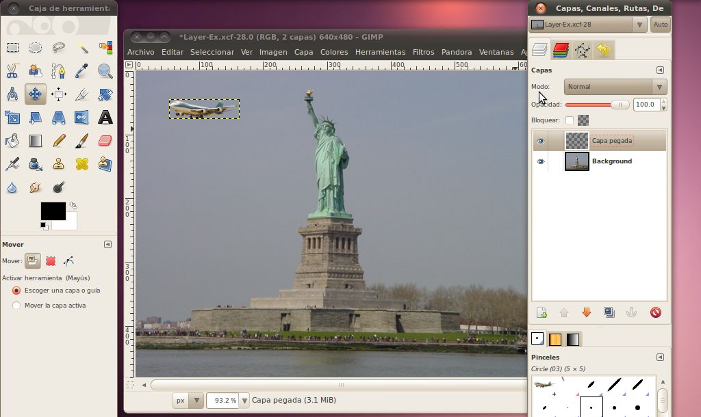<br>
<br>Eso se ve muy buen, pero lo que realmente se vende la imagen es si se tratara de volar detrás de la estatua. Cualquier persona puede copiar y pegar un avión en la parte superior de una imagen, sino para esconderse detrás de algo...que realmente va a tener un profesional!<br>
<br>Para hacerlo, vamos a seleccionar un área de la estatua, sin que ninguno de el cielo detrás de él, utilizando nuestra herramienta tijeras inteligentes.&nbsp; A continuación, vamos a pegar la selección en una nueva capa.&nbsp; Por último vamos a poner la capa de avión en entre la capa de fondo, y la nueva capa con una parte de la estatua. <br>
<br>No es necesario seleccionar la imagen entera, solo lo suficiente para conseguir el avión atrás.&nbsp; creo que parte del brazo debería funcionar bien.&nbsp; En primer lugar, asegúrese de hacer que la capa de fondo es la capa activa (que será al resaltado) haciendo clic en él.&nbsp; A continuación, utilice la herramienta tijeras inteligentes para seleccionar el área.<br>
<br>Quando usted tiene una buena zona, haga clic en su interior (o pulse la tecla Enter) para hacer el área una selección real.&nbsp; A continuación, pulse Ctrl+c para copiar y Ctrl+v para pegar.&nbsp; Ahora usted debería tener una capa de selección flotante en el cuadro de diálogo de capas.&nbsp; Haga clic derecho sobre él seleccione nueva capa para hacer esta parte del brazo de una nueva capa.<br>
<br>Ahora tenemos tres capas en la imagen, su mano dura para no perder de vista cuál es cuál.&nbsp; Para facilitar el GIMP le permitirá establecer el nombre de la capa a lo que quieras.&nbsp; Sólo haga doble clic en el nombre de la capa y escriba algo descriptivo, como "brazo" o "avión".&nbsp; <br>
<br>
<br>
<br>Bien, ahora tenemos todas las piezas en su lugar.&nbsp; Todo lo que tenemos que hacer es mover el avión detrás del brazo de la estatua.&nbsp; Para hacer esto, hacer que la capa activa un avión y ir haz clic en la herramienta de movimiento.&nbsp; Ahora sólo tienes que arrastrar el avión hacia el lugar correcto detrás del brazo.<br>
<br>
<br>Yo diría que se ve muy bien!<br>
<br>
<span style="font-weight: bold;">Ejercicio</span><br>Éstos son algunos pares más de imágenes que puede probar esto con.<br>
<br>
<a href="PhotoExamples/LayerBackground-A-orig.jpg">LayerBackground-A-orig.jpg</a><br>
<a href="PhotoExamples/LayerForeground-A-orig.jpg">LayerForeground-A-orig.jpg</a><br>
<br>
<a href="PhotoExamples/LayerBackground-B-orig.jpg">LayerBackground-B-orig.jpg</a><br>
<a href="PhotoExamples/LayerForeground-B-orig.jpg">LayerForeground-B-orig.jpg</a><br>
<br>
<a href="PhotoExamples/LayerBackground-C-orig.jpg">LayerBackground-C-orig.jpg</a><br>
<a href="PhotoExamples/LayerForeground-C-orig.jpg">LayerForeground-C-orig.jpg</a><br>
<br>
<h3 class="western">Ajuste de la iluminación</h3>La buena iluminación (lighting) es el elemento más importante que se necesita para tomar una buena fotografía.&nbsp; Desafortunadamente las condiciones de iluminación no son siempre buenas para un fotógrafo.&nbsp; Hay algunas cosas que se pueden hacer por el fotógrafo para trabajar con malas condiciones, por ejemplo en el interior a una distancia muy cerca que se puede usar el flash, pero a menudo el fotógrafo va a terminar con una imagen que no tiene la iluminación correcta.&nbsp; <br>
<br>Los resultados típicos se sobreexpuesta (overexposed), cuando demasiada luz es captada por el sensor de la cámara, subexpuesta (underexposed), cuando no bastante luz es captada por el sensor de la cámara, y una immagen donde las partes son al mismo tiempo encima&nbsp; por debajo expuestos.&nbsp; <br>Haga clic derecho en el enlace de cada imagen y guardarla en el disco<br>
<br>
<a href="PhotoExamples/Overexposed-Ex-orig.jpg">Sobreexpuesta<br>
</a><br>
<a href="PhotoExamples/Underexposed-Ex-orig.jpg">Subexpuesta<br>
</a><br>
<a href="PhotoExamples/Levels-Ex-small.jpg">Las piezas están sobre y sub expuestos.<br>
</a><br>
<br>Vamos a ir a través de estas tres imágenes y tratar de arreglar algunos de los problemas de iluminación con ellos.&nbsp; Vamos a empezar por la apterura de la foto sobreexpuesta en el GIMP.<br><br>Existen tres herramientas vamos a ver para arreglar los problemas de iluminación con estas imágenes, la primera es con much el más simple.&nbsp; Que es la herramienta Brillo-Contraste (Brightness-Contrast).&nbsp; Usted puede abrir haciendo clic en el menú Colores -&gt; Brillo-Contraste...<br>
<br>
<br>
<br>Usted puede ver que hay dos deslizadores que ajustan el brillo y el contraste de la imagen.&nbsp; Una manera de pensar de brillo (brightness) es el promedio de todos los píxeles, cuanto más cerca están todos en blanco, más brillante será la imagen es.&nbsp; (<a href="http://es.wikipedia.org/wiki/Luminosidad">http://es.wikipedia.org/wiki/Luminosida</a><a href="http://es.wikipedia.org/wiki/Luminosidad">d</a> <a href="http://en.wikipedia.org/wiki/Brightness">http://en.wikipedia.org/wiki/Brightness</a>)&nbsp; Contraste (contrast) representa la gran diferencia que hay entre los píxeles de la imagen.&nbsp; (<a href="http://es.wikipedia.org/wiki/Contraste">http://es.wikipedia.org/wiki/Contraste</a>
<a href="http://en.wikipedia.org/wiki/Contrast_%28vision%29">http://en.wikipedia.org/wiki/Contrast_(vision)</a>)<a href="http://en.wikipedia.org/wiki/Contrast_%28vision%29"></a><br>La imagen de arriba es muy brillante y bastante poco contraste.&nbsp; Para tratar de remediar esta situación, vamos utilizar el control deslizante de brillo para bajar el brillo y, a continuación el deslizador de contraste para aumentar el contraste.<br>
<br>Como puede ver, modificar la imagen de esta manera realmente poner de manifiesto el color de la imagen.&nbsp; También, usted puede ver más detalles, como las características de las montañas cubiertas de nieve en el fondo.&nbsp; Cuando te gusta cómo se ve, pulse Aceptar para que los cambios se escriban en la imagen.<br><br>Para una imagen simple como ésta, que podría ser suficiente, pero a veces se necesita un poco más de control sobre la imagen que sólo el brillo y el contraste.&nbsp; En primer lugar, vamos volver a configurar la image, para volver a la versión inalterada sólo podemos deshacer (Ctrl+z) veces suficiente para eliminar todos los cambios que hemos hecho, o simplemente hacer clic en Archivo -&gt; Revertir para obtener todos los camino de regreso.<br>Una vez que volvemos al principio, vamos a modificar la imagen de nuevo, con un mayor nivel de control de este momento.<br>Para llegar a este nivel superior, usaremos el cuadro de diálogo Niveles (Levels), eligiendo Colores -&gt; Niveles.<br>
<br>
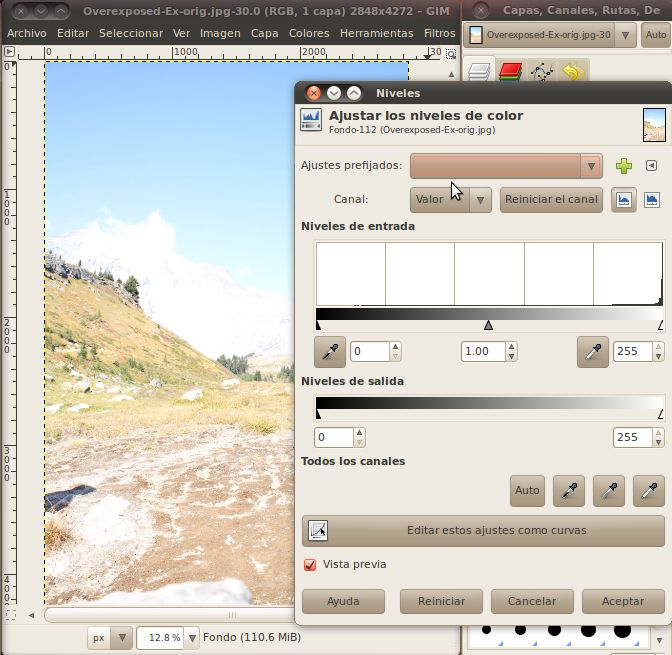<br>Hay tres partes importantes de esta herramienta que nos centraremos en.&nbsp; El primero es el "Canal" (Channel) desplegable.&nbsp; Si hace clic en este podrás ver las opciones de "Valor" (Value), "Rojo" (Red), "Verde" (Green), "Azul" (Blue), y "Alfa" (Alpha), que aparece en gris.&nbsp; No vamos a utilizar el R, G, B, o A canales de aquí, sino sólo ser conscientes de que usted puede hacer lo mismo que vamos a conocer en un momento a cualquiera de los canales de color por sí mismos.&nbsp; <br>Aquí, vamos a centrar en el canal de valor.&nbsp; Selección del canal de valor hace que la herramienta de combinar los tres canales de color en uno y trabajar con él de esa manera.&nbsp; Este canal de valor puede considerarse como la misma imagen si se convierte a 8-bit blanco y negro.&nbsp; Este modo es realmente llamado "escala de grises" (grayscale), porque puede ser de 256 niveles de gris.&nbsp; esta es la imagen convertida en realidad a escala de grises como un ejemplo.<br>
<br>Observe cómo la imagen es muy brillante, casi blanco. Incluso las áreas oscuras son sólo gris muy claro, definitivamente, no negro.<br>Mirando hacia atrás en el ejemplo anterior con el cuadro de diálogo de brillo y contraste, ahora podemos obtener una comprensión más clara de lo que estaba haciendo.&nbsp; La disminución de la luminosidad cambió la de todos los diferentes tonos de la imagen de arriba a un tono más oscuro de gris y aumentar el contraste de hecho la parte más oscura de la imagen más oscura, dejando la parte más clara solo.&nbsp; La única diferencia es que el GIMP no necesita tener una imagen en escala de grises para hacer esto, que matemáticamente podría determinar los niveles que se corresponden a la imagen gris de los colores diferentes, llamados los valores.<br>
<br>En el cuadro debajo la selección de canal bajo el título "Niveles de entrada" es un gráfico que se llama un histograma (histogram).&nbsp; Este histograma nos dice el número de píxeles de la imagen que se corresponden con cada valor.&nbsp; Por debajo del histograma es un degradado de negro (izquierda) a blanco (derecha), este gradiente es en realidad la escala para que el eje de la gráfica.&nbsp; Así, la altura de la gráfica sobre un valor particular a lo largo de ese gradiente se corresponde con el número de píxeles que tienen ese valor.&nbsp; Debido a que esta imagen es tan sobreexpuesta, el gráfico muestra que casi todos los píxeles están muy lejos a la derecha (blanco) parte de la gráfica.<br>
<br>Antes de continuar, echemos un vistazo a una foto con un histograma más normal.<br>
<br>Como se puede ver en la imagen en escala de grises a la derecha, un gran parte de la imagen, donde se encuentra el fondo de la hierba, es bastante oscuro, pero no es negro del todo.&nbsp; La mayoría de las aves es más clara, pero sólo una pequeña sección de ellos es en realidad blanco.&nbsp; Vemos, pues, una gran parte de la gráfica en la sección oscura, cerca de una cuarta parte del camino hasta el gráfico.&nbsp; Vemos otro pico hacia la derecha donde los cuerpos de las aves son, y sólo una pequeña cantidad final de las secciones completamente en blanco y negro en los extremos de la gráfica.\<br>
<br>Volviendo a nuestra imagen sobreexpuesta de las montañas, podemos ver que el histograma muestra que es casi todo por completo a la derecha (balnco) de la gráfica.<br>
<br>De hecho, el verdadero blanco (valor de 255) tiene una muy pocos píxeles.&nbsp; esto significa que estos píxeles son completamente sobre expuesta, también conocido como quemada (burned), y las áreas donde hay gran cantidad de estas no se pueden corregir para agregar más detalles.&nbsp; Cualquier información que la cámara podría haber encontrado en ellos se perdió, ya que se encuentran en el valor máximo.&nbsp; Eso es sólo el límite de la escala de 0-255.&nbsp; Sin embargo, podemos utilizar nuestras herramientas para llevar a cabo algún detalle más en todos los píxeles otros.<br>Para obtener más detalles acerca de histogramas, echa un vistazo a este gran sitio web (Ingles):&nbsp; <a href="http://www.cambridgeincolour.com/tutorials/histograms1.htm">http://www.cambridgeincolour.com/tutorials/histograms1.htm</a><br>
<br>Usted se dará cuenta en el histograma hay tres triángulos. Podemos utilizar estos triángulos para ajustar el color más oscuro en la imagen, el color más brillante en la imagen y el color medio en la imagen.&nbsp; Para ayudar a solucionar este problema de imagen, vamos a mover el color más oscuro arriba.&nbsp; esto hará que todos los píxeles representados en el histograma de la izquierda de donde nos movemos en la flecha que su valor para ajustar a cero o negro verdadero.&nbsp; Cada píxel otros en el resto de la imagen tendrá su reinicio valor para que hagan uso de toda la gama de 0 a 255, manteniendo la relación existente a todos los píxeles otros.<br>
<br>
<br>Eso se ve mucho mejor, podemos ver todo el color de los conocimientos adquiridos y hacer algunas funciones en las montañas en el fondo.&nbsp; Hay un último ajuste que podemos hacer aquí, y que consiste en cambiar el nivel de mediados de bajar el tono de algunas de las brillantes marrón/rojo colores que han tomado un apariencia casi antinatural.&nbsp; Simplemente deslice el medio triángulo gris un poco hacia la izquierda y compruebe los resultados.&nbsp; <br>
<br>
<br>Eso se ve muy bien.&nbsp; Cuando estés satisfecho con sus ajustes, haga clic en Aceptar para escribir en la imagen.<br>
<br>Ahora hay una herramienta más que podemos usar que nos dará un mayor control sobre los colores en el medio, que es la herramienta de curvas.&nbsp; Tras poner la imagen de nuevo al principio (o utilizar Ctrl+z or Revertir) haga clic en Color -&gt; Curvas para abrir el diálogo.<br>
<br>Se puede ver en el fondo que tiene un histograma en él.&nbsp; La única diferencia es que ahora hay también un gradiente en el eje vertical, que corresponde a la línea que corre a través de la gráfica.&nbsp; esta línea es la curva que vamos a manipular.&nbsp; El final de la curva que se encuentra en la parte inferior de la ventana se corresponde con el triángulo oscuro desde el diálogo de los niveles, y el final de la curva que se encuentra en la parte superior se corresponde con el triángulo blanco de el diálogo de los niveles.&nbsp; Toda la curva en el centro es una versión much más complicado del triángulo gris del diálogo niveles.<br>
<br>Podemos seguir adelante y fijar el final inferior de la espalda hasta donde tuvimos el triángulo oscuro en el ejemplo anterior.&nbsp; Una vez hecho esto, podemos hacer clic y arrastrar cualquier punto de la línea que va a través de la gráfica para crear curvas en ella.&nbsp; esto permite que los diferentes valores en la imagen para subirse y bajarse de manera diferente.&nbsp; Usted puede arrastrar varias partes de la curva para que los sistemas complejos de iluminación y oscurecimiento de diferentes valores originales.<br>
<br>Aquí he pasado el valor de gama baja hasta cerca de dos tercios del camino a través de la gráfica, la curva de los niveles salta un poco y luego de dar un oscuro (pero no totalmente negro) el valor de los píxeles cercanos a tal fin.&nbsp; La curva a continuación, el aumento de los valores de píxel más claro mantenerlos en constante aumento de la luminosidad hasta blanco.<br>
<br>De las curvas de diáogo de forma rápida y fácil jugar con muchos de diferentes valores de la imagen hasta que tienen exactamente lo que quieres.&nbsp; A continuación, haga clic en Aceptar para escribir el cambio a la imagen.<br><br>Ahora que tenemos todas las herramientas en la mano, vamos a ir a probar esto en el ejemplo subexpuestas.&nbsp; vamos a abrir en el GIMP y saltar directamente al cuadro de diálogo Curvas.<br>
<br>Aqui podemos ver que el histograma es un poco más amplia de lo que era de la imagen sobreexpuesta.&nbsp; Esto nos ha frenado un poco si se acaba con el diálogos de el brillo-contraste o de los niveles, pero no en el diálogo de curvas.&nbsp; Lo primero que debemos hacer es bajar el valor más alto un poco, a cerca de donde empieza el histograma se apagaba.&nbsp; Basta con hacer clic en el círclo en la parte superior y bien hacia la izquierda lo mantiene en la parte superior hasa que quede sobre el extremo del histograma.&nbsp; El siguiente paso es llevar a cabo algunos de los colores en las sombras.&nbsp; Podemos hacer esto mediante el aumento de la luminosidad de la curva mientras se encuentra el las zonas más a la izquierda de la gráfica. <br>Continúan experimentando con esto hasta que encuentre algo que parece bueno para usted, después haga clic en el botón Aceptar.<br>
<br>Por último, vamos abrir la imagen que tiene dos partes encima y por debajo expuestos.&nbsp; Cuando lo tenemos abierto, podemos ver que hay una sección de la izquierda, en los árboles que está casi completamente a oscuras, mientras que al mismo tiempo, las montañas de la derecha son demasiado brillante y lavarlo.&nbsp; <br><br>Si vas a abrir el diálogo de curvas se puede tratar de disminuir el brillo de las partes brillantes, y elevarlo en las partes oscuras, que hace que sea un poco mejor, pero todavía no tiene el aspecto de imagen tan grande.<br>
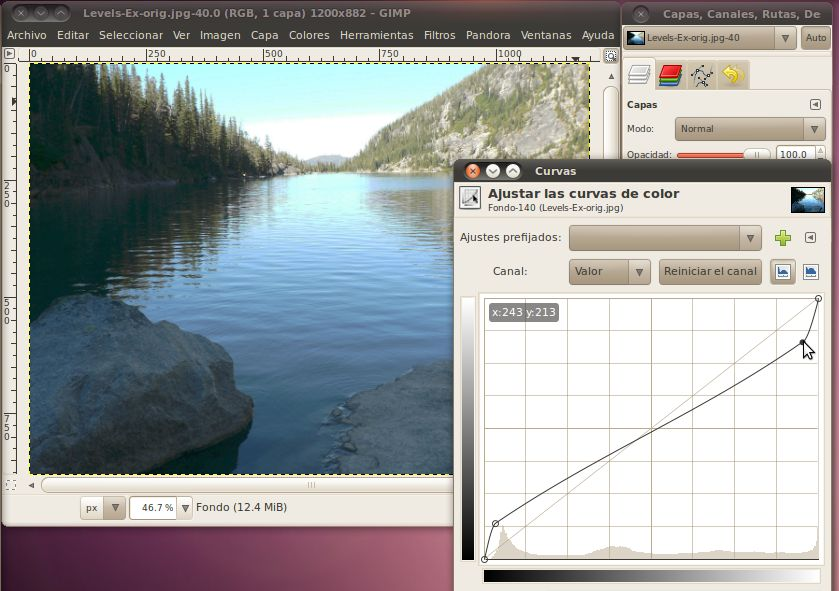<br>
<br>En su lugar, lo que tenemos que hacer es bajar el brillo más alto posible para las partes oscuras, la fuente y el más bajo posible oscuro en las partes brillantes.&nbsp; Pero, ¿cómo podemos hacer que todos en la misma imagen?&nbsp; El truco es que usted puede usar las curvas (y los niveles y brillo-contraste) la herramienta de selección de una imagen en lugar de toda la imagen.&nbsp; Así que todo lo que tenemos que hacer es seleccionar la parte oscura, lleve a cabo una corrección que , a continuación seleccione las partes brillantes y realizar una corrección differente allí.<br><br>Para hacer estas selecciones vamos a dar a la herramienta de selección difusa (fuzzy select) de un intento.<br>
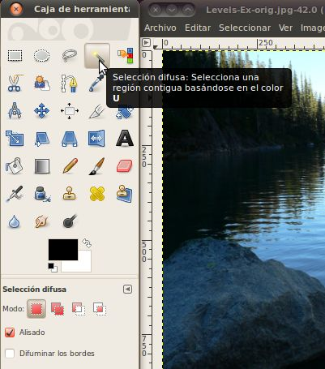<br>
<br>
Una vez que hemos selecccionado, haga clic en un píxel en el área que desea seleccionar, a continuación, mientras mantiene el botón del ratón, mover el ratón hacie abajo ya la izquierda para hacer crecer el área.&nbsp; La herramienta de selección borrosa automáticamente crecer el área de una manera en que selecciona otros píxeles cercanos que tienen un color o valor similar.&nbsp; Un pellizco que podemos hacer con esta herramienta es permitir que el "desvanecimiento de bordes" (feather edges) opción en las opciones de herramienta de selección difusa.&nbsp; Esto hará que el área que se selecciona a difuminar la línea entre lo que es y no es seleccionado.&nbsp; Hacer esto hará que el ajuste del nivel que vamos a hacer para disminuir alrededor de los bordes para que no se agudas diferencias entre las secciones.<br><br>Por lo tanto, vamos a seguir adelante y elegir un píxel en la zona oscura detrás de los árboles.&nbsp; Mientras mantiene el botón del ratón, mover el ratón hacia abajo ya la izquierda, podrás ver el área seleccionada crecer.&nbsp; Mantenerlo en funcionamiento hasta que la zona oscura de los árboles seleccionados, a continuación, suelte el botón del ratón.<br>
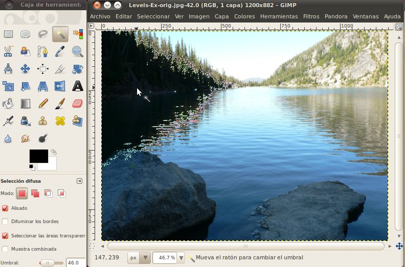<br>
<br>Ahora que tenemos nuestra selección realizada, podemos seguir adelante y abrir el diálogo de curvas y el trabajo de nuestra magia.<br>
<br>Aquí me mudé el valor máximo de blanco abajo a la derecha en el histograma se apagó.&nbsp; También bajó la oscuridad un poco en la parte inverior.&nbsp; Haga clic en Aceptar, cuando ya está listo.<br><br>El siguiente paso es seleccionar las áreas brillantes.&nbsp; Una vez más vamos a utilizar la herramienta de selección difusa para seleccionar el área apropiada.<br>
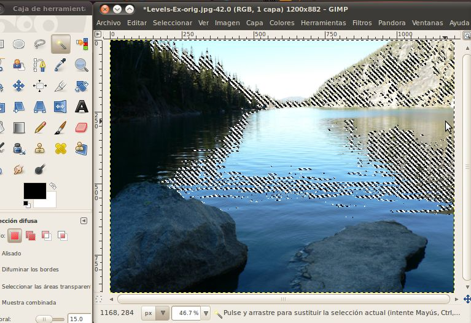<br>Una vez tenemos la selección, vamos a abrir el diálogo de curvas nuevo, y hacer que nuestra corrección en esta área.<br>
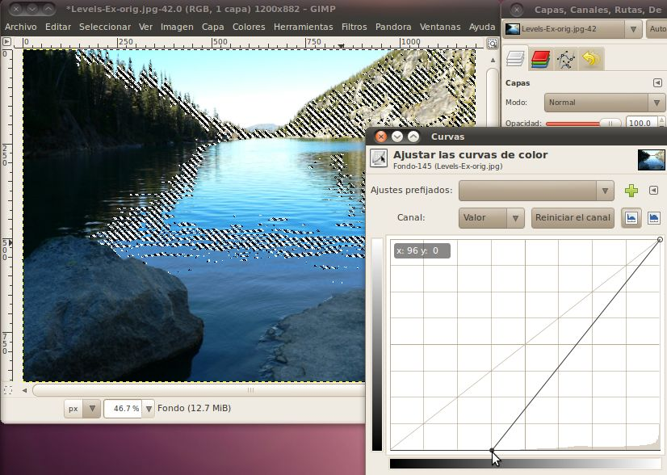<br>Esta vez simplemente me movió el punto más bajo oscuridad hasta la parte inferior de este histograma.&nbsp; Cuando estés satisfecho con sus ajustes, haga clic Aceptar.<br>
<br>Y aquí tenemos la imagen final:<br>
<br>Agradable y crujiente, con una gran cantidad de detalles toda la imagen.<br>
<br>
<span style="font-weight: bold;">Ejercicios</span><br>Éstos son algunos ejemplos de imágenes complejas con las zonas sobre y sub expuestas.<br>
<a href="PhotoExamples/Levels-A-orig.jpg">Levels-A-orig.jpg</a><br>
<a href="PhotoExamples/Levels-B-orig.jpg">Levels-B-orig.jpg</a><br>
<a href="PhotoExamples/Levels-C-orig.jpg">Levels-C-orig.jpg</a><br>
<h3 class="western">Minor Corrections</h3>
<p>For our final section on photo editing using the GIMP we will look
at a couple tools that allow us to correct minor issues with the image
or even the person being photographed.&nbsp; Some of these are: areas
of shadow, pixel noise, blemishes, wrinkles, and more.&nbsp; <br>
</p>
Lets get started by opening up a picture of a subject with a few minor
imperfections.<br>
<a href="PhotoExamples/Face-Ex-orig.jpg">Subject<br>
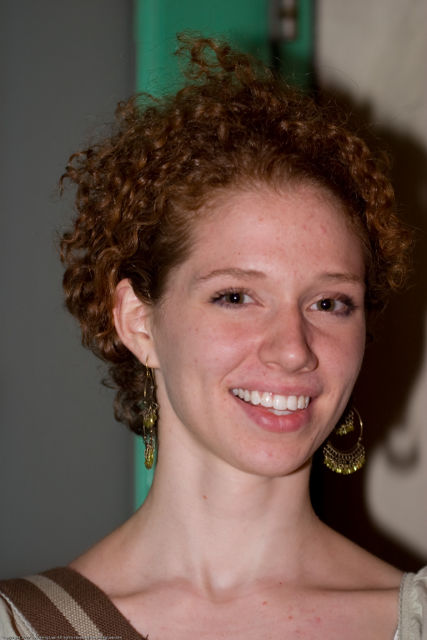</a><br>
<p>Now that we have that open lets create a new layer, identical to the
background layer.&nbsp; This way, when we make changes in the new
layer, we can quickly go back to the original by just clicking the eye
in front of the new layer to hide it.&nbsp; To make the new layer, just
right click on the "Background" layer and select "Duplicate
Layer".&nbsp; This will create an identical copy of the original for
you to work with.&nbsp; <br>
</p>
<p>Now we will meet the first of our tools, the Heal tool.&nbsp; <br>
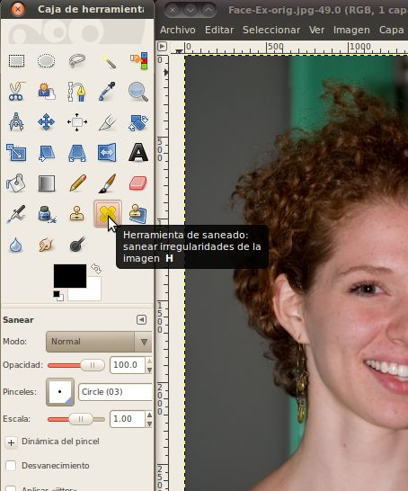<br>
The heal tool allows you to choose one spot (by holding down Ctrl while
you click that spot) then copy that spot to a new area (the size and
shape of the spot will vary depending on the brush you have
selected).&nbsp; When it puts that spot in the new area, it will
mathematically merge the new spot with what was already there.&nbsp;
This is great for getting rid of imperfections in a way the
incorporates the existing background, so it looks natural. <br>
</p>
<p>If you zoom in to the cheek below the subjects left eye, you will
see that there is an errant hair running across her face.&nbsp; Lets do
a Ctrl+Click just below this hair to select a part of the cheek that is
a good match for what we want there.<br>
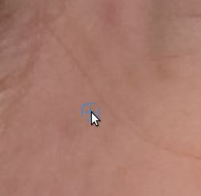</p>
<p>Once we have the source selected, we just need to go up and click on
a spot on the hair.&nbsp; Once that spot is done, you can move to the
next spot and click again.&nbsp; You may need to make sure your brush
size is large enough to see it working.&nbsp; It should be at least 10
for this, I have found that circle 13 works well. <br>
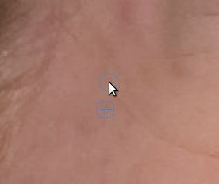<br>
</p>
<p>If you look at the above image, you can see the area above and left
of the cursor has had this applied to it, and the hair is gone!&nbsp;
Now we just need to keep doing this to the rest of the unsightly hair. <br>
</p>
<p>It is probably easier to click and drag across a good section of the
hair than to go through the whole thing clicking, but beware, as you
move the mouse your selection spot will move in the same direction that
the mouse moves as long as the button is held down.&nbsp; When you let
go, the selection spot will re-set to the original.&nbsp; If you picked
a spot close to the hair, for example just below where you first click
it, then you should be alright because the selection will just follow
the mouse and keep getting the area right below the hair, which is
fairly similar.&nbsp; However, if you had a selection near the top (to
the left of the eye) and started at the bottom and worked your way up,
your selection would soon end up in her hair, and then instead of
making the hair disappear it would make all sorts of new problems show
up in that spot.<br>
<br>
The best thing to do is to drag the mouse in such a way that the
selection follows very close to the mouse, then you keep the same
general color and lighting conditions from that part of the face.&nbsp;
However, if this isn't feasible, it is possible to hold the selection
position fixed so it won't move.&nbsp; Simply select "Fixed" from the
alignment drop down box in the Heal tool properties dialog. <br>
</p>
<p>The next tool we will use to fix up this image is the smudge
tool.&nbsp; Lets select it from the toolbox.<br>
<br>
The smudge tool will take the colors from one area and as you drag your
mouse move some of that color into the area you are dragging too.&nbsp;
It is very similar to if the picture were made of wet paint and your
ran your finger across it.<br>
</p>
<p>Here's a blunt example of smudge at work.<br>
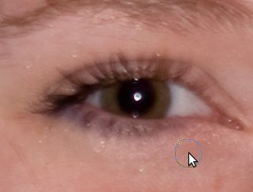&nbsp;&nbsp;&nbsp; 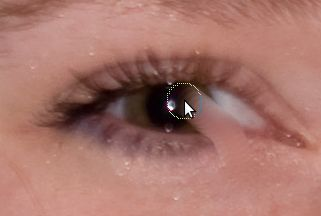</p>
<p>As you can see, the smudge took can really alter an area
drastically.&nbsp; However, this is not what we will use it for.&nbsp;
Instead, when you use the smudge tool, be sure not to accidentally run
over areas of the picture that are borders between important
areas.&nbsp; If you do slip and smudge somewhere you didn't mean to,
you can always undo the last smudge by using the Ctrl+Z key combination.</p>
<p>Lets go down to the subjects chin and use the smudge tool to remove
a blemish there.<br>
&nbsp;&nbsp;&nbsp;&nbsp;&nbsp;
&nbsp;&nbsp;&nbsp;&nbsp;
</p>
To remove these blemishes, I simply took my brush and moved down from
the top to the bottom, then went back up from the bottom to the top to
even things out.&nbsp; I was careful not to get it into the mouth, or
into the ridge just above and to the left of the area in
question.&nbsp; <br>
One other thing to try, if you still want it to blend in better, you
can try using one of the fuzzy brushes instead of a plain circle.&nbsp;
A fuzzy brush is one where when you click to apply it, the edges are
not strong and the effect of the bush action fades out over several
pixels.&nbsp; This is different from clicking with the circle brush
where one pixel is completely affected and the pixel next to it is
un-affected.&nbsp; This way, the edges of the smudge will be almost
untouched.&nbsp; It isn't as strong as a circle brush though, so you
may have to go over the area more than once.<br>
The final tool we will work with today doesn't actually change the
color of anything, but simply lightens or darkens it.&nbsp; This is
called the Dodge/Burn tool.&nbsp; In photo editing, to dodge something
means to make that area lighter, and to burn it means to make it
darker.&nbsp; <br>
<br>
Lets go ahead and select that tool.&nbsp; Also, if you haven't already
done so, go ahead and select a fuzzy brush.&nbsp; When you use the
Dodge/Burn tool you will see a very distinct line where the pixels
brighten or darken if you use a circle brush.&nbsp; Also, I would
recommend lowering the exposure down to something low (in the 10-15
range) for beginners.&nbsp; This just means that everywhere you move
the cursor will only be lightened a little.&nbsp; This will make things
go slower, as you'll have to drag the cursor over an area more than
once, but it gives you more control as to how quickly parts of the
image change.<br>
<br>
<br>
Once you're all set with the tool, lets zoom in on the right side of
the face.&nbsp; When this picture was taken, the light source was off
to the left, so the right side of the face has some shadow on it.&nbsp;
That's not always a bad thing, but in this case we will try to correct
it.<br>
<br>
We're just going to drag the mouse cursor over the dark area,
Especially moving up and down through the two shaded
depressions.&nbsp;&nbsp; <br>
&nbsp;
&nbsp; <br>
<br>
Looking good so far.&nbsp; Now take an opportunity to go around the
image and use these three tools to clean up the rest of it.&nbsp; You
may end up with something like this:&nbsp;&nbsp;&nbsp;&nbsp; <br>
&nbsp;&nbsp;
<br>
<br>
<span style="font-weight: bold;">Excercises</span><br>
Here are some more faces with some small imperfections to try the tools
out on.<br>
<br>
<a href="PhotoExamples/Face-A-orig.jpg">Face-A-orig.jpg</a><br>
<a href="PhotoExamples/Face-B-orig.jpg">Face-B-orig.jpg</a><br>
<a href="PhotoExamples/Face-C-orig.jpg">Face-C-orig.jpg</a><br>
&nbsp;
<h2 class="western">Photoshop</h2>
<p style="margin-bottom: 0in;">Cropping/Resizing/Rotation</p>
<p style="margin-bottom: 0in;">Redeye</p>
<p style="margin-bottom: 0in;">Layers and Selection</p>
<p style="margin-bottom: 0in;">Skin Corrections</p>
<p style="margin-bottom: 0in;">Adjusting Lighting</p>
<h2 class="western">Other Photo Editing Tools</h2>
<p><b>Picasa</b> -- Photo manager built and distributed by google. It
is more for storing photo collections, and managing them online
and offlline, but also has some photo editing ability, like cropping,
redeye removal and more. Available for Linux, Windows and Mac. -
<a href="http://picasa.google.com/">http://picasa.google.com</a> </p>
<p><b>Paint.NET</b> -- Similar, but less powerful than Gimp and
Photoshop. Only available for Windows, but is free, libre, and open
source software. - <a href="http://www.getpaint.net/">http://www.getpaint.net/</a>
</p>
<p><b>Corel Paint Shop Photo Pro</b> -- Almost as powerful as Gimp
and Photoshop, but a substantially different interface from them. -
<a href="http://www.corel.com/servlet/Satellite/us/en/Product/1208716806081">http://www.corel.com/servlet/Satellite/us/en/Product/1208716806081</a></p>
<p><b>Microsoft Paint</b> -- Comes built in with windows, but is
very basic. Even things like cropping and re-sizing are very
difficult. It is usable if you want to add a little text to an
image, or draw over something so that others can't see it (like
blanking out a screen name or IP address in a screenshot), but not
much beyond that.</p>
<p><b>Microsoft Photo Editor </b>or <b>Photo Manager </b>-- Tools
from Microsoft that come with Microsoft Office. Useful for basic
editing, such as cropping and re-sizing. </p>
<p><b>ImageMagick</b> -- A command line based tool (there are also
various graphical user interfaces for it) that instead of editing an
image by click on it edits the image by specifying commands that can
be done to it (e.g. -resize 30%, -crop 120x120, convert image.jpg
image.png and lots more). This is really great if you have a lot of
images and want to do the same thing to all of them. For instance
you can easily resize hundreds of images in a few seconds instead of
opening them up in the Gimp and resizing them one by one. Image magic
is free, libre, and open source software and runs on Linux, Windows,
and Mac. - <a href="http://www.imagemagick.org/">http://www.imagemagick.org/</a>
</p>
<p><span style="font-weight: bold;">Hugin</span> -- This is a tool that
will create a very high resolution panoramic photography by stitching
together multiple, overlapping photographs.&nbsp; When you have a
large, stationary (at least for a minute) scene like mountains, lakes,
etc., you can take several pictures where each one overlaps ~1/3 of the
one next to it.&nbsp; Then feed all these images into Hugin, and it
will give you an output image that combines all of the input images
into one.&nbsp; <a href="http://hugin.sourceforge.net/">http://hugin.sourceforge.net/</a><br>
</p>
<p><span style="font-weight: bold;">UFRaw</span> -- Some, more
advanced, cameras will allow you to get your images out of them in a
format generally called "Raw".&nbsp; This keeps any of the data that
might have been lost in the JPEG compression, as well as more data that
came from the sensors about the image.&nbsp; This extra data is useful
for professionals, as it allows them better control over
color/brightness corrections.&nbsp; UFRaw is a program that will work
with this raw images, it also has a plugin for GIMP that will let you
work with them in the GIMP.&nbsp; <a href="http://ufraw.sourceforge.net/">http://ufraw.sourceforge.net/</a><br>
</p>
<p><span style="font-weight: bold;">FSpot</span> -- A photo manager,
similar to Picasa, but open source (unfortunately, only runs under
linux). <a href="http://f-spot.org/">http://f-spot.org/</a><br>
</p>
<p><span style="font-weight: bold;">Shotwell</span> -- A photo manager,
similar to Picasa, but open source (unfortunately, only runs under
linux). <a href="http://yorba.org/shotwell/">http://yorba.org/shotwell/</a><br>
</p>
<br>
<h2>Vocabulary</h2>
Pixel - One dot in the image, composed of Red Green and Blue components
(and possibly Alpha for indicating if it has transparency)<br>
Dimensions - The size of the picture, indicated by Width X Height.<br>
Channel - The different red-green-blue-alpha components<br>
Lossless Compression - Storing a file so that it can be perfectly
re-created<br>
Lossy Compression - Storing a file so that it is smaller, but loses
some amount of detail<br>
Rotate - Change the orientation of the image.<br>
Crop - Cut off the an area around the image. <br>
Re-Size - Change the number of pixels that the image is without cutting
off any parts of the image.<br>
Layer - <br>
Selection - <br>
<br><br>TODO:Spanish videos<br>http://www.youtube.com/watch?v=5aazuiMSt_c<br>http://www.youtube.com/watch?v=9dtXj6RRwSE<br>spanish histogram site<br>finished example of underexposed correction<br>
<h2>Attribution</h2>
Pixel Value Image, Daniel G et al.,
<a href="http://commons.wikimedia.org/wiki/File:Rgb-raster-image.png">http://commons.wikimedia.org/wiki/File:Rgb-raster-image.png</a>,
Public Domain<br>
Additive Color, Webaware,
<a href="http://commons.wikimedia.org/wiki/File:AdditiveColor.svg">http://commons.wikimedia.org/wiki/File:AdditiveColor.svg</a>,
Public Domain<br>
Lossy Demonstration Lossless, <span class="comment">Shlomi Tal</span>,
<a href="http://en.wikipedia.org/wiki/File:LossyDemonstration-Original.png">http://en.wikipedia.org/wiki/File:LossyDemonstration-Original.png</a>
, CC-BY-SA<br>
Lossy Demonstration Medium, <span class="comment">Shlomi Tal,</span> <a href="http://en.wikipedia.org/wiki/File:LossyDemonstration-84less.jpg">http://en.wikipedia.org/wiki/File:LossyDemonstration-84less.jpg</a>,
CC-BY-SA<br>
Lossy Demonstration High, <span class="comment">Shlomi Tal,</span>
<a href="http://en.wikipedia.org/wiki/File:LossyDemonstration-98less.jpg">http://en.wikipedia.org/wiki/File:LossyDemonstration-98less.jpg</a>,
CC-BY-SA<br>
Gimp Introduction, Gimp Documentation
Team, <a href="http://docs.gimp.org/2.6/en/introduction.html#introduction-gimp">http://docs.gimp.org/2.6/en/introduction.html#introduction-gimp</a>,
GNU FDL<br>
Gimp Main Window Overview, Gimp
Documentation Team, <a href="http://docs.gimp.org/2.6/en/gimp-concepts-main-windows.html">http://docs.gimp.org/2.6/en/gimp-concepts-main-windows.html</a>,
GNU FDL<br>
Image Window Description Graphic, Gimp
Documentation Team, <a href="http://docs.gimp.org/2.6/en/images/using/imagewindow-description.png">http://docs.gimp.org/2.6/en/images/using/imagewindow-description.png</a>,
GNU FDL<br>
Image Window Descirption, Gimp Documentation Team, <a href="http://docs.gimp.org/2.6/en/gimp-image-window.html">http://docs.gimp.org/2.6/en/gimp-image-window.html</a>,
GNU FDL<br>
Great Egret Nest, Mike Baird, <a href="http://commons.wikimedia.org/wiki/File:Ardea_alba;_3_chicks,_Morro_Bay_Heron_Rookery_2_-_by_Mike_Baird.jpg">http://commons.wikimedia.org/wiki/File:Ardea_alba;_3_chicks,_Morro_Bay_Heron_Rookery_2_-_by_Mike_Baird.jpg</a>,
CC-BY<br>
Three Friends, Russell Harrison, <a href="http://www.flickr.com/photos/rharrison/1467377710/">http://www.flickr.com/photos/rharrison/1467377710/</a>,
CC-BY-SA<br>
Two Dancers, Russell Harrison, <a href="http://www.flickr.com/photos/rharrison/1551648804/">http://www.flickr.com/photos/rharrison/1551648804/</a>,
CC-BY-SA<br>
Voo Doo Music Fest, Katrina Szela, <a href="http://www.flickr.com/photos/93017934@N00/287761814/">http://www.flickr.com/photos/93017934@N00/287761814/</a>,
CC-BY<br>
Mike Roe with Julie and Audrey Quinn, James Emery, <a href="http://www.flickr.com/photos/emeryjl/891366632/">http://www.flickr.com/photos/emeryjl/891366632/</a>,
CC-BY<br>
Statue of Liberty, Gavcos, <a href="http://commons.wikimedia.org/wiki/File:Statue_of_liberty.jpg">http://commons.wikimedia.org/wiki/File:Statue_of_liberty.jpg</a>,
CC-BY<br>
El Al 747-200, Przemyslaw "Blueshade" Idzkiewicz, <a href="http://commons.wikimedia.org/wiki/File:ELAL_747-200_4X-AHQ_EPWA_24_08_2004.jpg">http://commons.wikimedia.org/wiki/File:ELAL_747-200_4X-AHQ_EPWA_24_08_2004.jpg</a>,
CC-BY-SA<br>
Intelligent Scissors Tool, Gimp Documentation Team, <a href="http://docs.gimp.org/2.6/en/gimp-tool-iscissors.html">http://docs.gimp.org/2.6/en/gimp-tool-iscissors.html</a>,
GNU FDL<br>
Stock Car Brazil Pace Car, Morio, <a href="http://commons.wikimedia.org/wiki/File:Stock_Car_Brazil_Pace_Car.jpg">http://commons.wikimedia.org/wiki/File:Stock_Car_Brazil_Pace_Car.jpg</a>,
CC-BY-SA<br>
Chicago from UIC, Hied5, <a href="http://commons.wikimedia.org/wiki/File:Chicago_from_UIC.JPG">http://commons.wikimedia.org/wiki/File:Chicago_from_UIC.JPG</a>,
CC-BY<br>
Airplane over Autobahn, poolie, <a href="http://www.flickr.com/photos/poolie/2611727104/">http://www.flickr.com/photos/poolie/2611727104/</a>,
CC-BY<br>
Chicago skyscrapers, Stephen Hanafin, <a href="http://www.flickr.com/photos/shanafin/3539282102/">http://www.flickr.com/photos/shanafin/3539282102/</a>,
CC-BY-SA<br>
2007/10/10 EC-HFP, Javier Pedreira, <a href="http://www.flickr.com/photos/wicho/1789307019/">http://www.flickr.com/photos/wicho/1789307019/</a>,
CC-BY<br>
Frankfurt skyscrapers, Danilo Paissan, <a href="http://www.flickr.com/photos/danilopaissan/2732030140/">http://www.flickr.com/photos/danilopaissan/2732030140/</a>,
CC-BY-SA<br>
Lufthansa Boeing 737-300, daspaddy, <a href="http://www.flickr.com/photos/daspaddy/3375583143/">http://www.flickr.com/photos/daspaddy/3375583143/</a>,
CC-BY<br>
Overexposed Mountains, avry xvx, <a href="http://www.flickr.com/photos/kimclit/4438966573/">http://www.flickr.com/photos/kimclit/4438966573/</a>,
CC-BY-SA<br>
Dark Cloud Over Kota Kinabalu, thienzieyung, <a href="http://www.flickr.com/photos/thienzieyung/4829364637/">http://www.flickr.com/photos/thienzieyung/4829364637/</a>,
CC-BY<br>
Colchuck Lake, Mahalie Stackpole, <a href="http://www.flickr.com/photos/mahalie/253842823/">http://www.flickr.com/photos/mahalie/253842823/</a>,
CC-BY-SA<br>
P5290060, Steve Broomfield, <a href="http://www.flickr.com/photos/spikycircle/18070686/">http://www.flickr.com/photos/spikycircle/18070686/</a>,
CC-BY<br>
Large Rock, Homini:), <a href="http://www.flickr.com/photos/homini/4327478688/">http://www.flickr.com/photos/homini/4327478688/</a>,
CC-BY<br>
Antler Lake 2, Holly Lawrence, <a href="http://www.flickr.com/photos/goat_girl_photos/228884109/">http://www.flickr.com/photos/goat_girl_photos/228884109/</a>,
CC-BY-SA<br>
Curly Hair Girl, See-Ming Lee, <a href="http://www.flickr.com/photos/seeminglee/870001120/">http://www.flickr.com/photos/seeminglee/870001120/</a>,
CC-BY-SA<br>
Blue Eyed Girl, See-Ming Lee, <a href="http://www.flickr.com/photos/seeminglee/870028244/">http://www.flickr.com/photos/seeminglee/870028244/</a>,
CC-BY-SA<br>
Circle Glasses Guy, See-Ming Lee, <a href="http://www.flickr.com/photos/seeminglee/870005490/">http://www.flickr.com/photos/seeminglee/870005490/</a>,
CC-BY-SA<br>
Dark Skinned Guy, See-Ming Lee, <a href="http://www.flickr.com/photos/seeminglee/869124633/">http://www.flickr.com/photos/seeminglee/869124633/</a>,
CC-BY-SA<br>
<br>
<br>
<br>
<br>
